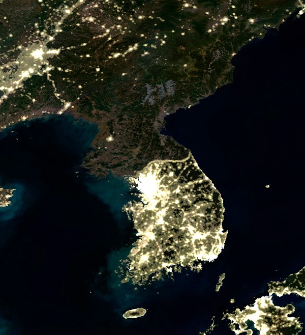
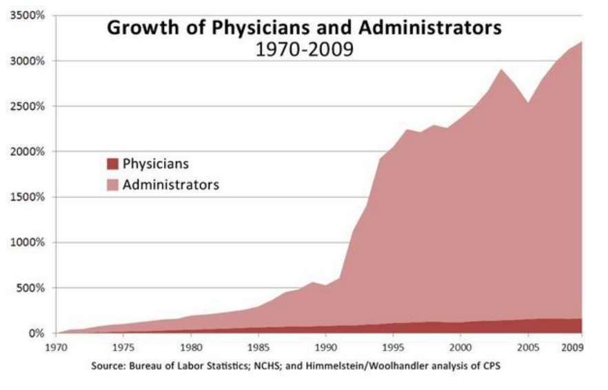
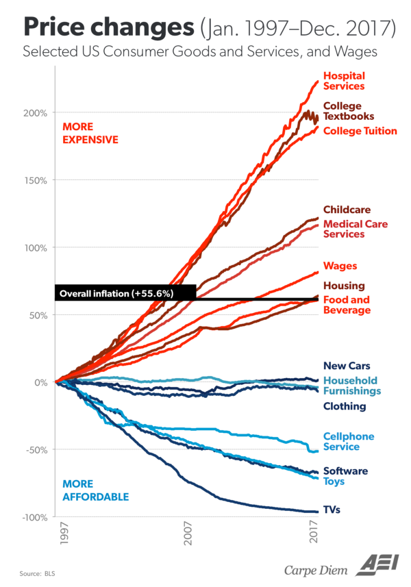
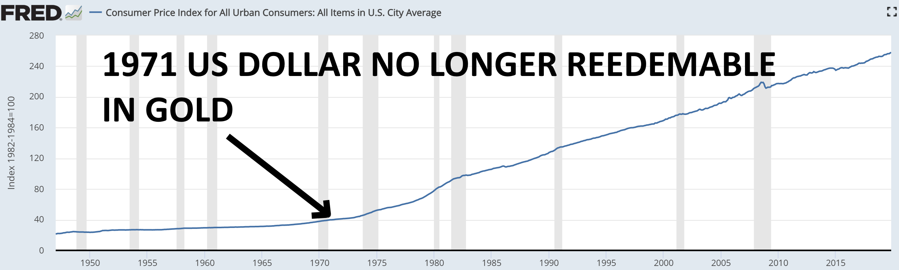

The human body/organism and the numerous “systems” that coordinate it like the respiratory, nervous, and digestive “systems”, is the result of the actions of some 30 trillion cells but obviously NOT the result of any conscious planning or designing by them. Thanks to the likes of Darwin and a modern understanding of genetics we can understand how natural selection was the inadvertent “designer” of such systems and complex order. The global socioeconomic order, or what the great British 19th century thinker Herbert Spencer referred to as “The Social Organism”, is also coordinated by a “system”, by what economists of the so-called ‘Austrian School’ like Ludwig von Mises and his great protégé, 1974 Nobel Laureate in Economics F.A. Hayek, referred to as “The Market Process”. ‘The Market Process’ and the “parts” it is composed of like money, prices, economic competition, interest rates, and the legal/religious/governmental frameworks that sustain it, “are indeed the result of human action, but not the execution of any human design” (Adam Ferguson). The ‘market process’ shares this trait with language which is also a complex mechanism that is the result of human action but was not consciously designed or invented by people/cells. Just like cells are unaware of why they act the way they do and how natural selection has evolved them over billions of years to be parts of complex multi-cellular organisms, so is mankind unaware of how “processes of selective evolution” have shaped “the brain and society” and created “the market process” which coordinates our actions to create Spencer’s “Social Organism”.
Standing on Mises’ shoulders, who provided him with a superb explanation of the workings of the economy and thus all aspects of the market process(money/prices/interest rates/etc.) and much, much, much more, Hayek would go on to explain how in a few thousand years culture and ‘the market process’ had co-evolved to transform homo sapiens, from tribes of slightly smarter apes, into today’s massively complex global socioeconomic order/‘Social Organism’ thus arguably becoming the first person in the history of mankind to provide a complete evolutionary understanding of how the world works. Hayek is still is so far ahead of our time that even today’s leading thinkers, like renowned popular science writer Matt Ridley, are just catching up to the enormity of his insights. Ridley humbly acknowledges this in a 2011 speech where he mentions:
“As someone who came to Fredrick von Hayek comparatively late in life, I’m still catching up with him…Indeed, many of the insights I thought I had discovered in my own readings and writings on the frontier of evolutionary biology and economics it turns out Hayek had long before me…It’s Hayek who first puts it all together.” - Matt Ridley
So how did Hayek ‘put it all together’?. Easy. Hayek realized that “all enduring structures above the level of the simplest atoms, and up to the brain and society” require precise information to sustain/coordinate/expand their order. If one understands how information coordinates the biological and social orders, then one understands how the world works. It is that simple!
What follows below can be roughly divided into two parts, the first discusses how the socioeconomicorder works, and the second how it has co-evolved with culture/religion/ideology. As we do so we try to apply the ideas focusing on how economic ignorance is the root of mankind’s most pressing problems including antisemitsm/Jew-Gentile relations which continue to play such a disastrous role in the Middle East and will likely lead to mankind’s final world war. This essay is written with a ‘Misesian Ethos’. Ludwig von Mises believed that "Economics deals with society’s fundamental problems; it concerns everyone and belongs to all. It is the main and proper study of every citizen” and is thus it is written with the hope/expectation that it can be understood by the curious/motivated layperson.
“Enduring structures” like living things and society are self-perpetuating orders that are in continuous cycles of wealth production and consumption. Production involves the transformation or relocation of matter to create wealth. As economist Eugen von Böhm-Bawerk put it:
“To”produce“: what does this mean? It..is not”creation" in the true sense of the word, but only a fashioning of imperishable matter into more advantageous shapes…”
And consumption transforms/relocates wealth/matter in a way that sustains or expands living things/orders and their internal parts/orders. The Sun sends us photons/energy which the process of photosynthesis is able to store in chemical form. This energy is then used to power the cycles of production/consumption. If there is more production than consumption then the order is profitable and thus has additional wealth with which to sustain itself for longer periods and/or grow. For example, paramecium are single-celled life-forms that produce food/wealth by swimming around and swallowing small bacteria which they then consume by digesting and transforming them into the various nutrients/wealth needed to maintain and expand the paramecium’s internal order and thus life. A more complex multi-cellular animal like a person, is simply a collection of cells (which are themselves orders) which must be productive as a whole in order to produce and then consume the necessary wealth needed to nourish itself and the sub-orders/organs/cells/organelles it is composed of. Today we not only have biological order, we have social order, Spencer’s “Social Organism”, which is rapidly growing and increasing its ‘rate of production’, in other words, the rate at which it transforms the earth’s matter into human usable wealth/order/life/biomass. Every year, increasingly automated building-sized machinery in the mining industries scrape/mine less than 10 cubic miles of matter from the earth’s massive volume of 260 billion cubic miles. This matter is ‘collaboratively transformed’ or relocated by billions of people as trillions of dollars worth of wealth in terms of cars/computers/buildings/products/etc. are produced thus increasing the word’s economic pie of wealth and social order. These continuous cycles of production and consumption require precise knowledge/information. By focusing on how information arises, spreads, and guides these cycles of production and consumption which lead to order/life/society we can have a simple yet profound understanding of how the entire world works.
“Processes of selective evolution” can be said to have created two mechanisms for creating two types of orders/“enduring structures”, biological and social. The biological order is created via the well-known mechanism of ‘biological evolution’ with genes being like the sentences which store the information necessary to create/coordinate life/order. Mutations cause new genes and thus new information to arise which leads to a different life-form which is then ‘naturally selected’ as it inadvertently competes with others, with the winner reproducing more and thus passing on more copies of the better-adapted/“fitter” genes/information/design to later generations.
The more complex a thing is, the more information is needed to create it and keep it in order. Tiny E. coli bacteria have about 4,000 genes and are relatively simple in structure and function. On the other hand, each human cell has about 25,000 genes thus containing far more information allowing each cell to specialize and take part in a vast “division of labor” by transforming itself into a heart/lung/nerve/etc. cell as a young fetus develops inside the womb. About 500 million years ago, life-forms with brains began to emerge which allowed information to be stored outside of genes. Eventually life-forms evolved that used their brains to be increasingly “social” and cooperate with others to reach even higher levels of relative productivity/fitness/competitiveness which leads us to ourselves, anatomically-modern man (about 50,000 years ago), whose ancestors had spent over 2 million years living in small nomadic tribes of about 15 to 150 people where everyone more or less knew how to do the same things so information was inefficiently repeated across the social order. Just like few genes/information leads to simple bacteria, few brains lead to a simple and relatively unproductive social order. Tribal man had an information storage/sharing problem. Then something wonderful happened, something as momentous in the history of life as the emergence of biological evolution. The so-called ‘market process’ and its various components like trade, money, economic competition, and very recently “interest rate coordination” began to emerge, thus giving birth to Spencer’s “Social Organism”.
We begin by introducing 3 simple concepts which are like a Swiss-army knife of economics.
The first and perhaps most important of all: The production of wealth requires the consumption of wealth. For example, if 10,000 men are to spend 2 years producing an airplane factory, they must consume/use the concrete/materials/food/energy/transportation/shelter/wealth that they (as well as their dependents/family) need while they produce the factory.
More money does not equal more wealth. Imagine if everyone in the world suddenly had an extra billion dollars. Would this make society wealthier? No. The amount of REAL wealth(goods/services) has not increased by a single toothpick. It would actually lead to less wealth since many people wound stop working/producing seeing their new-found fortune. Would the 10,000 men above be able to produce the factory if instead of having real wealth to use/consume had to consume pieces of paper with dead presidents on them? Of course not.
More money leads to and enables higher prices. For example, if there are 1,000 people in an island (BlueIsle) and each has $100 for a total of $100,000 in the island, can anything sell for $200,000? Of course not, even if they all combined their money such a transaction could not happen because there isn’t enough money, but what if each person had $500 so that there is now a total of $500,000? Then yes obviously, prices could go up to $500,000. So for general prices to go up there HAS to be more money. And who creates the money and is ultimately responsible for a general increase in prices? Generally speaking, today all money is created by governments via their central banks (Federal Reserve in USA) and they are thus responsible for the price increases. Assuming the total amount of money remains stable, if the economy/wealth is expanding, which can only happen if the rate at which goods/services/wealth is produced is faster than the rate at which it is consumed, we expect general prices to go DOWN because the money will sort of get divided among more goods/wealth so less money per item/wealth means a lower price. If the amount of wealth remains stable or grows slower than the amount/supply of money, then we have more money per item, thus higher prices.
Let’s go over another insightful scenario. Keep your eye on how much wealth is being produced and consumed, and the relationship between the quantity of money, wealth, and thus prices. Let’s say Alan prints himself another $100,000 which is enough to hire half the people in BlueIsle for 3 months while they build him a small castle. Alan thinks this is a great idea, he is paying some people more than what they were making before, there were also a few unemployed or unmotivated-to-work people before but he is offering enough money to get everyone working thus achieving “full-employment”. Prior to trading their labor for Alan’s paper/money, people were producing stuff that they either wanted/needed to consume themselves or could be sold/traded to others who obviously wanted/needed to consume them, they were producing “socially desired” or “order/life creating/sustaining” stuff like oranges/apples/hair-cuts/blankets/baskets/etc. The day half the population begins working on Alan’s castle, the island’s economic pie begins to lose half its “socially desired” stuff/wealth since half the population is no longer creating it, and begins increasing the amount of rocks, ladders, and other things for Alan’s castle. These things, are NOT “socially desired” or “order creating/sustaining” wealth as judged/calculated by the inhabitants. Since the existing $100,000 will be distributed over half as many socially-desired-goods, this would eventually motivate their prices to about double. However, since Alan is further doubling the money supply as he pays people using his newly printed $100,000, on the last days of castle-building, when half the population is still working on his castle and they have also received most of the new $100,000, prices would have nearly doubled once again making them about 4 times higher than they were before Alan came up with his idea. It should be easy to see that Alan has reordered society in an inferior way. Everyone is “working” and making more money than before, but the unavoidable reality that they are ordered in a less productive way reflects itself in the much higher prices and smaller amount of wealth on average that each can consume. Ideally people now “lose their jobs”, and instead of working on the easily identifiable yet disastrous plan laid out by Alan, for a few days there appears to be “chaos” as people discover superior plans and likely transition to their old trades/jobs thus once again reordering society on a far, far more productive way. However, they are economically ignorant, so they tell Alan “Can you hire us again to make the castle bigger? You pay us more than what we used to make before. You are about to create massive unemployment”. Alan thinks to himself “Gosh! It is a good thing that by creating money I am preventing massive unemployment and chaos. Obviously I must keep providing ‘liquidity’!” So the relative suffering continues. Had Alan been a bad king, who taxed people at a 50% rate to get the wealth to build his castle, the people’s living standard would have suffered similarly, but they would have easily understood the fact that their wealth was taken from them for the creation of things they didn’t want or benefit from for a hopefully more obvious massive loss. So we can see how “inflating the money supply”, in other words, creating more money, can be used to expropriate wealth from society without having to coerce it from anyone. You are similarly worse off if a bad king takes half of your saved $1,000 leaving you with $500 with which to buy 500 $1 hamburgers instead of 1,000, than if the king doubles the money supply and spends it to acquire wealth causing prices to double so that your $1,000 will only buy you 500 hamburgers at $2 each. Under normal circumstances everyone is producing, trading, and consuming, but those who create money are pure consumers who once again leave society with less wealth and more money thus higher prices.
Trade and money led to the “division of labor and information” which allowed the social order to efficiently compartmentalize information in only the brains that needed it and also accumulate a virtually limitless amount of information with which to continuously restructure itself in increasingly more productive/advanced ways. For example, Mark’s brain contains knowledge of how to get coconuts and process them to create pastries. Tom’s brain contains knowledge of how to find the best vines and weave them together to make baskets. Jim’s of where to find rocks which when split can create sharp knives and how to sharpen them. When Mark trades his pastries for Tom’s baskets and Jim’s knives he is a benefactor of all the knowledge needed to creating those items yet he only had to know how to make his pastries. Unlike the tribal social order where knowledge is inefficiently repeated across every brain, trade allows for information to be efficiently stored fewer times freeing up more brains to contain more information. We can envision 1,000 men producing and trading 1,000 different types of items requiring 1,000 times more information which without trade and the ‘division of information’ that it enables would have been impossible to achieve in a tribal society. Also, when Mark trades his pastries for the baskets and knives he can now make less trips to gather coconuts by using the baskets and process them faster by using the knives and thus increase his ‘rate of production’ from 2 to 10 pastries per day. The pastry-making process has become more productive and also more complex because it was enabled by basket and knife making knowledge. We now have a never-ending cycle of increased ‘rate of production’ and complexity -> population growth (more brains) -> increased ‘rate of production’ and complexity -> more brains -> … leading to where we are today with nearly 8 billion people and the inability to fully trace the knowledge that enabled the creation of anything. For example, a web-designer can trade his services which are dependent on web-design information that resides in his brain for money, and then trade the money for any of the billions of products/services that exist in the world and are likewise dependent on information spread throughout the world. The websites he creates are also enabled by all the information that enabled the “factors of production” he used to create them, like his computer, monitor, keyboard, software, electricity, the Internet, etc., which themselves are enabled by all the information that enabled their “factors of production” like the computer’s memory, processor, and so on. Everything that is produced today is the result of an interdependence of information that spans millions of minds, not just in the present, but in the past as well, because wealth that is currently being produced/consumed is dependent on tools/‘factors of production’/information provided further in the past. When he upgrades to a better computer, the information that enabled these improvements also contributes to/enables the improvement of his website production process. Without money how would a heart surgeon trade his costly services for toothpicks? Without trade and money, this “division of labor and information” as well as the inter-temporal cooperation/interlocking/stacking of information just described would not exist and neither would our social order which depends on it.
In the ‘Social Organism’ new/superior information arises and spreads largely thanks to economic competition. Economic competition motivates the social order’s billions of minds/CPUs to constantly innovate and copy each other’s innovations thus continuously generating and spreading superior information, inadvertently reordering society as fast as humanly possible/profitable, turning it into a sort of super-computer which coordinates the transformation of matter into socioeconomic order/life. For example, all private sector orders/companies like BMW, Ford, and Toyota are constantly innovating and copying each other’s innovations like power door-locks/windows and more recently electric vehicles thus continuously creating/spreading superior information and subsequent order. Why do they do this? Because potential customers have the freedom to trade their life/order sustaining wealth with the better informed auto-manufacturers/competitors. This in turn motivates all competitors to learn/copy each other lest they not get enough revenue/wealth with which to pay their employees a competitive wage so they leave to join the better informed and thus more productive/efficient orders. This wonderful automatic mechanism is “turned on” or “emerges” from the simple concept, or better said, tradition of ‘private property’. Private property gives everyone in our role as consumers the ‘freedom to trade’ our life/order-sustaining wealth for what we calculate/think is best. This ‘freedom to trade/choose’ in turn motivates everyone, in our role as producers, to discover how to order ourselves in a manner that produces something society/customers value (our labor, a product/service), which we do by, once again, innovating and/or copying/learning existing ideas/information, in other words, by competing in the economic sense. Most of us simply choose to produce and then trade our labor with a company/order that knows how to further incorporate our labor in a more competitive/profitable way.
Just like in the Olympics we can discover the best athletes in the world due to global competition, so does free-trade among all nations/peoples/orders allows the best ideas to compete/spread globally thus ensuring the best possible global order. As cost-cutting ideas emerge and inevitably spread via competition leading prices to continuously fall, new profitable ideas easily arise and once again spread via competition in an endless cycle of knowledge generation/innovation. For example, computers were once very expensive, but once the price of making them came down enough, people easily realized that every home could have them, which gave birth to our computerized world and the Internet and all the great things that flow from it. The more wealth is produced, the more wealth has to be offered in exchange for labor as companies/orders compete against each other for the labor they need which helps explain why the economic pie grows for everyone. For example, imagine that after a shipwreck you end up in an island where everyone has a machine that can turn dirt into food. Tom wants your labor to build a home, Mark, to build a boat, and Gina to plant a garden. Competition will motivate them to offer you all the food you want and more.
How much wealth had to be consumed in order to produce a gallon of gasoline that sells in Seattle for 3.50? Or a pound of beef that sells in a store in London for 5.35? We can’t know for sure, however, we can be fairly certain that it was less than the advertised price which on average must include the costs. The price of any item in the world lets us know that there is an order at that particular place and time that is coordinated by information that can produce the item while consuming less than the advertised price. THAT IS AMAZING! This allow goods to be purchased and combined in a manner that ensures that the combination (like a car) can easily have a price set that properly accounts for the costs/consumption of the whole (car) by just adding the prices of the parts used to produce it (wheels, glass, robotics, labor, etc.), parts which themselves had a price set that included their costs/consumption and so on, each part/input managed/ordered by entrepreneurs with highly specialized time-and-place specific information who are always using profit/loss calculation to ensure they are increasing the economic pie. The concept/tradition of ‘private property’ plays a vital role here as well, it is not until matter/things are privately owned, that they are controlled/coordinated by brains/CPUs that are incentivized to use/reorder/coordinate them in the most productive/profitable way possible.
The information needed to create/coordinate the social order, like whether to produce cars, or buildings, or pizzas, where to do so, what prices to set, and most importantly, how to produce them in a manner that more wealth is produced than consumed, is information that can only be created by free people dispersed throughout the world thus rendering central planning ideologies like Socialism/Communism IMPOSSIBLE regardless of the good intentions of their members or their intelligence. For example, a Cuban restaurant in Miami Beach sells a picadillo dish (ground beef, plantains, rice) for $8. Perhaps $1 might be profit, and $7 will be spent in costs, in other words, in the necessary consumption of wealth needed to produce the meal/wealth, things like equipment/electricity/food, and everything employees and their families will consume at home (food, energy) thanks to their paychecks that came from the $7/meal. The businessman discovered 1) that there are enough customers nearby willing to patronize the restaurant at the $8/meal price which necessitates taking into account customer’s already existing local competitive options thus providing an improvement in society, and 2) how to reorder $7 worth of stuff(labor/supplies/etc.) to produce the meal. If he sets prices too high, customers will choose other superior existing competing options. If he sets prices too low, he won’t cover costs and cause more consumption than production thus shrinking the economic pie. These are two vital things that are impossible for a central planning body to discover and helps explain why every time Communism has been attempted the result has been a much faster rate of consumption than production and eventual famine/starvation/death.
It is important to envision the socioeconomic order as it really exists as if looked at from high above. Envision people coming together/apart as companies/orders emerge and dissolve in ever-changing conditions. Superior information arising and rippling/restructuring the social order thanks to competition. As orders get more productive they lure other people to ‘trade-with’/‘join-them’ by offering more money/wealth for their labor relative to other companies/orders, eventually causing the least productive orders to sort of dissolve as their ‘factors of production’ like labor, buildings, etc. are bid away to be parts of more productive plans/orders. A sort of swarm intelligence emerges as the all-pervasive public quickly nourishes the growth and spread or superior orders/companies/information, inadvertently expanding the worldwide “division of labor and information” as entire neighborhoods/cities morph themselves in specialized ways as complementary pieces of information/orders segregate themselves in distinct geographical locations like the software industry in Silicon Valley, California and manufacturing in Guangdong, southern China. As Mises reminds us “The division of labour is a fundamental principle of all forms of life.” The division of labor is a pattern/way which natural selection rediscovers to enable smaller units/orders to efficiently compartmentalize labor/information as they contribute-to (and are nourished-by) a larger organism they become parts of(Organelles -> Cells -> Organs -> Humans -> Social Organism).
Finance/banking and interest rates are other vital aspects of the ‘Market Process’. Besides the more obvious function of safeguarding savings and pooling the savings of many people to allow the execution of bigger projects which would have been impossible if entrepreneurs were limited to the few savings/wealth of friends and family, banking/finance and more specifically the phenomenon of ‘interest rates’ also play a nearly miraculous role. For example, assuming interest rates are at around 8-10%, some people, those who have no desire to start a business or have inferior business ideas they expect will have a return on investment (ROI) lower than 8%, will be motivated to refrain from consumption/spending, thus increasing the amount of wealth/savings available, and lend their money to banks to earn ~8% interest. The banks are a place where such saved money can be combined, easily accessed and loaned out in different quantities to nourish ideas/businesses/restructurings of different sizes. Banks charge borrowers a higher interest than what they pay out to savers/lenders and profit the difference. For example, they lend $1 million to John who uses the money to pay for his business’ consumption as it produces (has sales revenue) $1,300,000 worth of stuff thus growing the economic pie by 30%. He pays back loan with the 10% interest ($1.1 million) and keeps the $200,000. The Bank pays the savers 8% ($80,000) and keeps the %2 ($20,000) with which to pay-for/nourish its own consumption. Something amazing is going on here. Interest rates motivate the accumulation of wealth and movement of money from minds/CPUs that have inferior ideas that can grow the economic pie slowly (0-8% rate) to minds that have superior ideas and can grow the economy faster (> 10%) thus giving a tremendous sort of ‘computational boost’ to society. To the economically ignorant, banks/financers/money-lenders, making a living by charging interest without seemingly having to “sweat” seems immoral/unethical, but the economically woke can see how they play a vital role in pairing savings with the best ideas and the interest rate is like a barometer that helps decide whether a mind should do the saving or borrowing. It is important to realize that, as the great economist/journalist Henry Hazlitt writes in his classic “Economics in One Lesson”:
“ “Saving,” in short, in the modern world, is only another form of spending. The usual difference is that the money is turned over to someone else to spend on means to increase production”,
and that this increase in production has to be at least large enough to pay back the loan with interest. A society that saves little is sort of stuck in the same cycle of production and consumption and is unable to nourish a new business/idea/restructuring for the time it might take before it produces wealth. Where would our 10,000 airplane factory builders get the wealth to nourish their consumption for the 2 years it would take them to even begin making new planes if others had not saved it? How long would it take for such savings/wealth to exist if savings grow very slowly? On the other hand, a society that saves a lot is constantly making wealth available for superior ideas/businesses/restructurings and thus growing and advancing technologically much faster.
The more people save, the more money banks will have to lend out and the lower the interest rate will be as banks compete with each other by offering a lower interest rate to lure borrowers. This also means that there is more REAL wealth available to sustain more ideas/businesses, the REAL wealth that savers did NOT consume when they gave their money to banks. If interest rates are at 10%, it does not make sense to borrow/consume to nourish an idea/restructuring that will have a return on investment of less than 10%, but if they go down to 3%, then it does make sense for additional entrepreneurs to borrow and nourish ideas that will yield 10% ROI to profit the 7% difference. Now, VERY IMPORTANT!. What happens if interest rates are lowered, not because more saved/unconsumed wealth is available, but because central banks increased the money supply(“bank credit”) to “artificially lower” interest rates from the “natural rate” of 10%, to the “artificial rate” of 3%? What happens is that additional projects/ideas which would NOT have been attempted before will now be attempted even though the needed wealth to sustain them to profitable completion will not exist eventually leading to a sort of “bust”/bankruptcies, and partly-finished projects which squandered wealth. Mises has a masterful analogy that goes as follows. At any moment in time given a certain real “natural rate”(again, we assume 10%), there exists enough wealth in terms of bricks/wealth needed to create 100 buildings/projects. If people have really saved more to bring down the interest rate from 10% to 3% there are now more bricks/wealth and 120 buildings/projects can be completed, but if the interest rate has gone down to 3%, not because there really are more bricks/wealth/savings, but because more money has been created, the bases and some scaffolding for 120 buildings is attempted, but eventually, due to the fact that there are now more businessmen with more newly created money which was used to lower the interest rate competing for the same amount of bricks/wealth, the price of bricks (factors of production like labor,land,energy,materials) goes up more than would have otherwise been the case, which eventually causes many entrepreneurs to face the unavoidable fact that there did not exist enough wealth/bricks at the right prices to complete their projects in a profitable way, therefore a sort of bust/chaos and loss of wealth will eventually happen as inevitable bankruptcies occur. Partly finished buildings that are inhabitable are obviously massive losses, and even though eventually perhaps 70 buildings are completed, the wealth/bricks that could have completed an extra 30 was consumed/used to create 50 unfinished ones. Mises summarizes:
“Credit expansion cannot increase the supply of real goods. It merely brings about a rearrangement. It diverts capital investment away from the course prescribed by the state of economic wealth and market conditions. It causes production to pursue paths which it would not follow unless the economy were to acquire an increase in material goods. As a result, the upswing lacks a solid base. It is not real prosperity. It is illusory prosperity. It did not develop from an increase in economic wealth. Rather, it arose because the credit expansion created the illusion of such an increase. Sooner or later it must become apparent that this economic situation is built on sand.” Mises L. v., 2006, p. 162
It should be easy to see that you can’t “print savings” at least not the REAL wealth/savings that the REAL world needs, yet to John Maynard Keynes, arguably the most famous mainstream economist, such money-only savings “are just as genuine as any other savings” Let’s look at another absurd statement from Keynes which further reflects the utter ignorance of the vital role savings play in the economy:
“…whenever you save five shillings, you put a man out of work for a day. Your saving that five shillings adds to unemployment to the extent of one man for one day — and so in proportion. On the other hand, whenever you buy goods you increase employment…For if you buy goods, someone will have to make them. And if you do not buy goods, the shops will not clear their stocks, they will not give repeat orders, and some one will be thrown out of work. Therefore, oh patriotic housewives, sally out to-morrow early into the streets and go to the wonderful sales which are everywhere advertised. You will do yourselves good…And have the added joy that you are increasing employment, adding to the wealth of the country because you are setting on foot useful activities…Surely all this is the most obvious common sense. For take the extreme case. Suppose we were to stop spending our incomes altogether, and were to save the lot. Why, every one would be out of work. And before long we should have no incomes to spend.” (Keynes, “Essays in Persuasion”)
Wow! First of all, when most people save their money they invest it, which for the general case here we’ll just assume that it is loaned out at interest. The money still gets spent by the borrowers as Hazlitt already reminded us. With respect to his “extreme case” where people save all their income and don’t spend. Why bring up such a foolish scenario that would never be in anyone’s best interest to attempt? Who does not want to trade/spend for the food, gasoline, wealth they need to survive?
Keynes, like most of his adherents (and the public at large sadly), is also utterly ignorant of the vital fact that ‘economic activity’ must be coordinated in a way that produces more than it consumes, otherwise it is obviously shrinking the economic pie. Yet this coordination requires precise knowledge and is something only millions of free individuals and businessmen can achieve by using profit/loss calculation at the individual, household, and corporate level. Unaware of this, Keynes disastrously encourages the purposeful destruction of wealth just so people are put to work rebuilding it even though the effects of this are a massive shrinking of the economic pie. He writes:
“…activity of one kind or another is the only possible means of making the wheels of economic progress and of the production of wealth go round again.…why not pull down the whole of South London from Westminster to Greenwich, and make a good job of it…Would that employ men? Why, of course it would!” (“Saving and Spending” by John Maynard Keynes (1931))
One should not be fooled by fancy money-related terms or mathematical equations. Complex-looking mathematical equations/models are just as inappropriate for making sense of the socioeconomic order as they are for making sense of how trillions of cells, bacteria and viruses coordinate the biological one. If you just keep your eye on the cycle of wealth production and consumption, most economic fallacies can easily be avoided. The housing that comprises the ‘South of London’ exists, it is then destroyed thus a huge loss in wealth has occurred, then a massive amount of existing wealth has to be consumed in terms of food/energy/materials/etc. to sustain many men who produce new buildings. The net result is the loss of existing housing and the wealth needed in exchange for new buildings. Had the housing not been destroyed, Londoners would’ve still had them plus new housing or whatever else the men would have produced as they consumed the same amount of existing wealth as before.
So the erroneous belief that real savings/wealth can be “printed” to then “stimulate the economy” (i.e. ‘activity of one kind or another’ even if you have 0 regard for whether the people are ordered in a way that produces more than it consumes), provide the one-two punch of fallacies that keep the mainstream making the same errors over and over, culminating in the most horrific economic fallacy that could possibly exist, that war is good for the economy and its corollary, that WWII is what got the USA out of the Great Depression of the 1930s. Consider the following absurdity by 2008 Nobel Laureate in Economics Paul Krugman:
"Think about WWII…it brought us out[of the great depression]… If we discovered that, you know, space aliens were planning to attack and we needed a massive buildup to counter the space alien threat…this slump would be over in 18 months"
How can getting millions of people to consume/wear-down existing wealth to produce weapons which are then used to destroy fellow human beings and their property be anything other than an obvious reduction in life/wealth/order? Krugman’s statement is the perfect example of what Mises once told students:
"Don’t be afraid to speak up. Remember, whatever you say about the subject and however wrong it might be, the same thing has already been said by some eminent economist."
We should quickly add that morals are simply ways of acting, they are knowledge which also emerges and spreads via economic competition. Companies/orders that hire/nourish/‘trade with’ lazy, disrespectful, or corrupt people will be less competitive and be inevitably pressured/selected to hire people with better morals which in turn forces everyone to be respectful and hardworking regardless of race, sex, etc. Similarly, it is hard-working, tolerant, courteous people who thanks to competition inevitably force everyone else to be likewise. As Hayek tells us:
“Competition is, after all, always a process in which a small number makes it necessary for larger numbers to do what they do not like, be it to work harder, to change habits, or to devote a degree of attention, continuous application, or regularity to their work which without competition would not be needed.” (Hayek “Law, Legislation and Liberty, Volume 3: The Political Order of a Free People” 1981, p. 77)
As millions of Italians, Britons, Germans and others from all over the world came to America, it was ultimately the competition which grows from ‘private property’ and thus individual liberty/freedom which stripped these people of their otherwise nationalistic/ethnocentric/tribalistic identities and evolved what came to be seen as the classic American character/ethos of wanting to be seen as a reputable/honest businessman/professional who treats everyone with respect and wears a business suit as opposed to older religious/ethnocentric dress. So not only does ‘private property’ “turn on” or leads to economic competition and other aspects of the market process and resulting social order/civilization, it also evolves our culture/identity to be ideally suited for participation in the ‘Social Organism’.
Governmental/‘public sector’ orders, being COERCIVE MONOPOLIES which get their life/order-sustaining wealth through taxes/compulsion are immune to the competitive-information-spreading incentives/pressures which motivate/force private sector orders to be efficient/innovative so they obviously don’t have “to work harder, to change habits, or to devote a degree of attention, continuous application, or regularity to their work” which should help one further understand how Communism, which abolishes competing orders and replaces them with a single competition-less monopolistic bureaucracy, lacks both incentives/pressures to innovate/learn as well as “work harder” thus leading to a massive lack of production/innovation and eventually socioeconomic chaos/starvation as the economic pie continuously shrinks as has happened in every country that consciously attempts Communism/Socialism or inadvertently drifts in that direction as their governments get bigger and bigger (USA/Word). The image below is another one of our most powerful memes for explaining the difference between competitive/private orders(South Korea) and monopolistic/government orders (North Korea). Again, keep your eye on how information arises/spreads and continuously restructures the social order.

With our focus on how information arises and coordinates life/order, we can see that a government regulation is essentially a “way” of doing things, it is information. But unlike information that arises in the private/competitive sector and is constantly being replaced by superior information due to economic competition, a government regulation is information that arises out of a few brains and is then forced upon the entire social order via the law and can only be changed via a painfully slow monopolistic/bureaucratic apparatus made up of economically ignorant politicians, lawyers, lobbyists and special interest groups who always lack the necessary local time-and-place-knowledge and incentives to discover what is the best way to do something. The more the government regulates, the more it paralyzes competitive knowledge discovery. As government regulations have increased in the health care sector, turning it into a sort of island of paralyzed top-down competition-less/socialist central planning, so have costs. These increased costs have led the sector to grow from consuming just 1.6% of the American economic pie in 1960 to 4.2% in 1980 to a whopping 16% in 2006 and about 18% by 2017. The image below helps explain the regulatory paralysis/bureaucratization of the entire medical sector which is responsible for the skyrocketing costs.

What a person must learn in order to legally offer medical advice via licensing of doctors, where he must learn it via licensing of medical schools, what chemical compounds can be legally consumed, how to test drugs, how the medical insurance industry should work, and countless other gigantic bodies of knowledge/information are dictated by monopolistic competition-less bureaucracies like the American Medical Association (AMA), the Food And Drug Administration (FDA) and numerous others. By comparison, the Information Technology sector has very few government regulations so competition motivates the creation and spread of superior information at breakneck speed and is obviously transforming our world right before our eyes. Teenagers can work at Google/Microsoft/Amazon and write the software that keeps planes in the sky or people alive via software in medical equipment, yet there is no American Association of Computer Programmers dictating what or where such knowledge can be obtained similar to how the government via the AMA regulates/monopolizes/paralyzes the medical sector via the licensing of doctors, medical schools, insurance sector, etc. There is no government monopolistic bureaucracy ensuring the proper functioning of the software that runs PCs, smart-phones, the Internet, or ensuring the lack of malware or viruses in software. Freedom and competition in the Software Development industry is even quickly evolving culture. It is increasingly seen as uncool and backward to have a traditional degree, where one wastes thousands of dollars and time physically attending gigantic temple-like universities, inefficiently (“professors” instead of popular online videos you can pause/rewind) “learning” things that have nothing (English 101, etc.) to do with being a productive software/web/IT professional. Thanks to this lack of monopolistic centralized decision making/regulating/paralyzing, education in the Software Development/IT world is astounding. At places like www.freecodecamp.org thousands of people are going from 0 experience to highly-paid computer programmers in just a few months for free. IT companies who reach a large enough size ultimately due to the great services they provide, and therefore the useful/profitable knowledge they contain, like Microsoft, Google, Amazon, and many others, go about creating their own educational institutions which train and test people using their products and technologies which are solving real problems and have been shaped by years of fierce competition. There are over 2.1 million individuals worldwide who have become Microsoft Certified Professionals(MCPs) by studying for and passing exams created by Microsoft. These exams change frequently to reflect the never-ending cycle of knowledge generation that exists in this freer and less regulated sector of the economy. Economic ignorance leads many to believe that since one has to be seemingly more careful with medicine, such monopolistic regulatory oversight is somehow necessary. This is irrelevant, if it is superior knowledge that is needed, which includes figuring out how careful to be, freedom and competition is the best way to discover it, period. In graph below one can see how the more regulated a sector is (Hospital Services) the more expensive/consumptive it becomes.

One of the numerous flaws in how the AMA goes about regulating the world of medicine is in the assumption that medical professionals have to be some of the brightest and most dedicated people around, which it attempts to achieve by making entry into medical school and training such an arduous and ultimately expensive process. But this assumption is false, what cures people, or produces any product or service in today’s world, is not so much hard working bright individuals, it is the tremendous amount of knowledge and cheap technology that the market-process-coordinated world puts at our fingertips. This flaw is not specific to the AMA, it applies to our educational establishments and much of how we look at learning and the role of human intelligence. The market process and resulting world-wide “division of labor and information” is far, far more important than individual intelligence/IQ/effort. For example, Mike knows he can incorporate Tom (who has down syndrome) into his landscaping company by having him perform simple tasks in a manner that increases the company’s ‘rate of production/revenue’ in terms of landscaping services by an additional $4/hour ($640/month). Mike trades $3/hour ($480/month) for Tom’s labor to make a $1/hour ($160/month) profit, and after just 10 hours of labor/production and trade, Tom can produce a mindbogglingly complex tablet by trading his $30 for it. Thus it currently takes about 10 hours of labor for a low-IQ person to produce something that was impossible to create just 20 years ago. “But he didn’t really create the tablet!” thinks the economically ignorant. But guess what? The economically woke knows the neither did the company that “manufactured it”. Did such a company create the tablet’s CPU? Or the memory/camera/touchscreen/battery/plastic? Or any of the machinery/tools required to produce the aforementioned components? Of course not. The “manufacturer”, just like Tom, mostly traded and added a relatively minuscule amount of new information compared to what it already got from the “Social Organism” and its world-wide division of labor/information that has been evolving for thousands of years. Due to massive economic ignorance, Tom’s truly astounding rate of production is impossible to achieve because it is either illegal for someone to trade their labor/production for a rate lower than the minimum of $12/hour (i.e. California), or because the legal expenses related to paying someone less than the minimum make it unprofitable to do so. Minimum wage laws are regulations which essentially outlaw all production that does not occur faster than the legally mandated minimum.
By understanding how patents do far more harm than good we can continue to solidify our vital understanding of how information coordinates the social order. One of the reasons why we so naively fall for the erroneous idea that patents are good for society is because we greatly overestimate the importance of the individual or company making the discovery while being unaware of how it is ‘the market process’, via its various mechanisms like prices, the profit motive and competition, which plays the key role in innovation. Competing orders/companies, due to the fact that they are already in business competing with each other, contain knowledge that has to be relatively similar. If one competitor has knowledge that leads to much more productivity/profitability, it would drive some competitors out of business, and it would also motivate competitors to copy/emulate the superior knowledge thus leading to a state where once again all competitors contain more or less the same knowledge and inevitably come up with new products/improvements/innovations. Which particular mind manages to stumble upon a new innovation has more to do with chance and circumstances than anything else. Patents inevitably turn competitors which are ultimately cooperators since we are constantly learning from each other as we compete, into bitter rivals; give credit to one where many, or better said, the entire social order via the market process and world-wide division of labor are involved; they slow down the market process by preventing further innovation by competitors whose ideas are based on patented ideas because they now have to pay large sums to patent holders; they remove competitive pressure from patent holders thus making them lazier and worth their time and money to go into the damaging business of suing patent infringes thus retarding technological progress; and since the patent system is overseen by a monopolistic and bureaucratic government organization, it is bound to grow more inefficient and chaotic and also prone to manipulation by the better-connected. Patents, just like regulations, simply create/spread paralysis in the market process. The information technology industry, although less regulated than the health care sector provides a good example of how patents begin to paralyze an industry. Prior to 1981 computer programs could not be patented and this helped spark the explosive growth of the computer/software industry. As Microsoft founder Bill Gates tells us:
“if people had understood how patents would be granted when most of today’s ideas were invented, and had taken out patents, the industry would be at a complete standstill today. I feel certain that some large company will patent some obvious thing… If we assume this company has no need of any of our patents then they have a 17-year right to take as much of our profits as they want. The solution to this is patent exchanges with large companies and patenting as much as we can.” (Bill Gate, “Microsoft Challenges and Strategy,” memo, May 16, 1991)
So Gates clearly saw how patents would lead to paralysis. Unfortunately his solution at the time was not to argue for the abolishment of patents altogether(which I don’t blame him for), but to attempt to protect his company by patenting as many things as possible with which to threaten/protect itself from others in this new ecosystem of warring/litigating patent holders. Given the incentives, this is the strategy that works or is “naturally selected”, thus we have bigger and bigger patent holders fighting it out in order to progress, while at the same time making it harder and harder for the little guy or new competitor to innovate.
Without patents, the social order is constantly improving and moving the best information which can be copied freely/quickly, but existing patents inadvertently disincentivise this more ideal outcome and cause research/wealth to be diverted for the discovery of non-patented inferior information. For example, a whopping 77% of new drugs approved by the FDA are not “new” in the sense that they make some significant improvement compared to an existing drug; they are what are referred to as “me-too” drugs. These “me-too” drugs are usually inferior to drugs already on the market to treat the same condition, they simply allow competing drug manufacturers to enter the market to treat a condition where other companies might be making huge profits due to their patents/monopolistic position.
Innovating is a lot easier than people think. As previously mentioned, as prices or costs of production go down, that which was prohibitively expensive becomes possible which in turn makes other things possible and so on. The world is vastly more innovative today than it was 100 years ago not because we got any smarter because obviously our biology has not changed, but because the market process has made it easier to innovate. Some innovations revolutionize entire fields and make it easy for further innovations to come about. For example, how much easier was it for scientists to make biology-related innovations once the electron microscope took magnification from about 2,000 times to over two million? How much easier was it to invent all sorts of gadgets once electricity came about, or computers, or the Internet? The market process and continuously evolving world-wide division of labor can be seen as a sort of ever-growing ladder taking humanity up an infinitely high tree whose fruits are innovations. For the most part all we have to do is easily pick them off the branches when the ladder gets us there. Very expensive endeavors that only seem profitable if granted patents can be seen as attempts to grab a fruit/innovation that is currently too high up in the tree and we are better off just waiting for the normal technological progress to get us there by cheapening all related research/etc. instead of damaging the workings of the system/ladder in an attempt to make gains that really leave us worse off due to the damage made to the ladder/system by patents.
The damaging pro-patent ideology is also adding to tensions between patent enforcing nations and developing nations who are being coerced or erroneously persuaded to implement patents while also being sort of accused of “stealing our ideas without proper compensation”. This is rooted in the same fallacy of attributing innovation to those making the innovation as opposed to the market process. So-called “developed” areas like North America, Europe, and Japan became developed because the market process managed to work well enough in those areas as to incentivize and coordinate minds in a way that so much knowledge was created, and this was done, in spite of patents, not because of them. Old people, being more likely to be found with cancers, does not mean that having cancers leads to old age, it means that natural selection has built us in a way that we can continue to live for a while in spite of the cancers. Too much government, just like too much cancer, eventually destroys the super-structure. The market process’ ability to organize the social order in ways that lead to what we would call progress is amazing. A little freedom goes a long way. Technological progress in the 20th century has been great, in spite of cancerous government bureaucracies, wars, patents and other misguided government regulatory frameworks which we believe to be the creators or managers of social order while they are in fact its retardants or destroyers to significant degrees. Think about how truly unfair the following is: the Chinese had the misfortune of having much of their 20th century destroyed by war and a truly communist economy which led to the deaths of tens of millions while the market process used millions of brains in the US to discover new ideas, and now that the Chinese increase their freedom and begin to have their social order be coordinated by the market process, they have to pay royalties to the West. This seems pretty “unfair” to me. Developing nations like India and China should not feel like they are “stealing” ideas from the more developed nations, and likewise the United States should not be souring economic relations based on patent infringement which you can be sure is a significant part of the economic saber-rattling that the economically clueless/tribalistic Trump administration is doing.
Having discussed several aspects of the market process like economic competition and interest rates, as well as how ‘private property’ inadvertently leads to its emergence, we can now discuss how ‘processes of selective evolution’ evolved the ‘market process’/‘Social Organism’ without conscious human planning or design. As Carl Menger asks:
"How can it be that institutions that serve the common welfare and are extremely significant for its development come into being without a common will directed towards establishing them?"
Hayek answered this monumentally important question more or less as follows. If we envision mankind about 50,000 years ago, we would see a sort of petri-dish of competing cultures(languages/concepts/rules/laws) that are being ‘naturally selected’ based on their ability to grow the groups that contain them relative to other groups. Customs/concepts/rules/religions/etc. that inadvertently cause their respective social orders to grow whether it’d be via conquest, successful defense, migration into, imitation, etc., expand their order AND the very customs/concepts/rules/ideologies/etc. which helped them thrive. Every rule/law has an effect in the productivity/growth/survival of a social order. Given that a society/tribe is likely to have dozens of such rules it is impossible to know the exact impact of any one of them when considering the overall competitiveness of a society/order. For simplicity’s sake let us focus on just one rule, what is the optimal punishment for theft? Let’s assume that in culture/tribe ‘A’ when a man steals he is killed which might deter many thefts but decreases the number of people in the group and all the productivity that this person might contribute in the future. In tribe ‘B’ they cut off a hand, and in tribe ‘C’ 10 lashes. Let’s assume that tribe A’s custom/rule of killing the thief actually proved to lead to a “fitter” social order. Perhaps it turns out that cutting off the hand led to an unproductive person that became a big drain on rest of tribe and a weak/useless fighter when it came to offense/defense so it was better if he was dead, and that lashes proved to not be enough of a deterrent which led to many thefts and retaliatory violence which turned out to be more costly than losing a member of the tribe. For simplicity’s sake let us assume that this was by far the most important custom/rule affecting the growth/fitness of the social order, and that because of this, tribe/culture ‘A’ eventually displaced the others so that its kill-thieves rule/custom survived while the other punishments disappeared. The kill-thieves rule, is the result of human action, yet not the result of conscious human planning or design with the reasoned or conscious goal of having a more competitive/fit social order. The real designing of this rule or cultural element was made, not by innate instinct or human reason, but by ‘natural selection’/competition/‘group selection’/‘cultural evolution’.
This concept of ‘cultural evolution’/‘group selection’ allowed Hayek to identify a sort of ‘third dimension’/source/mechanism for discovering/spreading knowledge which was neither instinctual (tied to our genetics/biology), nor the result of our conscious reason. As Hayek liked to refer to it, it was a mechanism for creating/spreading information which laid “between instinct and reason” and is the largely unknown/understood source of knowledge that played the vital role in the evolution of the market process and those related social institutions. Omnipresence, the ability to be everywhere at all times is another concept that would provide a great benefit to religions that used it to describe their God. Without God’s omnipresence you could get away with breaking the rules that give society order and only have to face the consequences brought upon by fellow men. But if God is everywhere, watching your every move, you will be much more likely to follow those rules that give your society a productive social order. A similar case can be made for the concepts of “sin” and “evil”. Did clever men “conspire” to create our religions to control us? Of course not, like the ‘market process’ they too “are indeed the result of human action, but not the execution of any human design”. These concepts/rules help enforce constraints on what for brevity’s sake we’ll refer to as our evolved tribalistic(‘small group’)/primate-like nature/instincts, which for millions of years were shaped by things like cannibalism, rape, what today would be considered pedophilia, tribal warfare and other practices which are now seen as abhorrent and whose relatively recent suppression via culture/religion/law enabled the emergence of the ‘Social Organism’/civilization. Growing up is about programming/molding our flexible brains into learning all of these rules and thus rewiring them to be as happy as possible even though many of these restrictions go counter to our ‘uncivilized instincts’. We have tentacle porn, Q.E.D. Obviously the molding/brainwashing fails quite often when we engage in rape/torture/militarism/war/“sin” and more. One can easily speculate about how the simplicity and pro-private-property character of Judaism’s Ten Commandments (‘Thou shalt not steal/murder/’commit adultery’/ ‘covet(neighbor’s…)) and monotheism helped it be more ’viral’ and thus be ‘naturally selected’ over other beliefs/religions that might have been more complex/confusing/contradictory and also be less respectful of private property thus inadvertently foregoing the emergence of the market process and corresponding ‘Social Organism’/Civilization. Just like natural selection modified solitary cells to have tumor suppressing genes to control rapid cell division/proliferation (cancer) in order to cooperate in a multi-cellular organism, so has cultural evolution likewise molded us to suppress these “uncivilized” tendencies. As Hayek tells us:
“Man has been civilized very much against his wishes. It was the price he had to pay for being able to raise a larger number of children. We especially dislike the economic disciplines… The indispensable rules of the free society require from us much that is unpleasant, such as suffering competition from others, seeing others being richer than ourselves, etc., etc.” (Hayek “Law, Legislation and Liberty, Volume 3: The Political Order of a Free People” 1981, p. 168)
“Constraints on the practices of the small group, it must be emphasized and repeated, are hated. For as we shall see, the individual following them, even though he depend on them for life, does not and usually cannot understand how they function or how they benefit him.”…“Disliking these constraints so much, we hardly can be said to have selected them; rather, these constraints selected us: they enabled us to survive.” (Hayek “The Fatal Conceit”, 1989, p. 14)
When/how did we begin “naming” people which would bring a tremendous advantage for group cooperation. Associating ideas/language with the concept of the “self”? And linking the “self” with group/religious/tribal identities which was vital for group/tribal cohesion in war/conquest/defense? These vital early cultural concepts are neither “in our genes”, and also “do not prove to be the result of an intention aimed at this purpose, i.e., the result of an agreement of members of society” (Menger), they were designed/refined by competition between groups. Most slightly smarter apes still place great emphasis on their “identity” as Jews, Christians, Muslims, etc., inadvertently causing us to overlook the fact that for pretty much everything that matters we are all just slightly smarter apes. Obviously it only takes a few seconds to come to the realization that whatever “identity”/religion one identifies with is purely based on luck/circumstance and having grown up among fellow slightly smarter apes that raise us identifying as such. Since Jews tend to be an extended blood-related family that has been an oftentimes persecuted minority due to religious squabbles of antiquity/etc., the sense of “identity” and ethnocentrism is understandably stronger and has been an important albeit unfortunate factor in both antisemitism and Zionism. Both antisemitism and Zionism are rooted in the same intellectual error, that the slightly smarter apes who “identify as Jews” are so different from the other slightly smarter apes that they must leave the real thousands of towns and Synagogues where for hundreds of years they were an integral part of Western Civilization to create a country based on religious mythology in an area already populated by others who had a different “identity”(Muslims,Christians, and fellow anti-Zionist Jews) and for numerous understandable reasons were adamantly opposed to living under such a theocratic/ethnocentric “Jewish State”. Theodore Herzl himself, the great founder of political Zionism highlighted this ideological congruance of both Zionists and antisemites in his foundational book “The Jewish State”(1896) that:
“The anti-semites will be our most steadfast friends.” “The anti-Semitic countries will be our allies” "Great exertions will hardly be necessary to spur on the movement. Anti-Semites provide the requisite impetus. They need only do what they did before, and then they will create a desire to emigrate where it did not previously exist, and strengthen it where it existed before."
We already mentioned how freedom and the competition that grows from it was shaping the relatively “ethnocentric” identities of all peoples and turning us into worldly citizens. During the early days of Zionism, many Jews were divided into the Zionists and anti-Zionists (“assimilationists”). Chaim Weizmann, the leading Zionist figure after Herzl’s death in 1904, lamented how “assimilated Jews” were “dead against Zionism” and identified Zionism (correctly IMHO) as “a primitive tribalism”:
“For assimilated Jews…They looked upon it…as a primitive tribalism. They felt themselves…called upon to”rescue" Judaism from Zionism…these people are dead against Zionism…Zionism is not meant for those people who have cut themselves adrift from Jewry…"
Unfortunately, for very understandable reasons/factors for which nobody is to blame and are ultimately rooted in economic ignorance (more on this vital subject later), like a rocket that is just about to reach orbit but runs out of fuel and comes crashing down to earth, Zionism would inadvertently pull Jews and all of Western Civilization back to an increasingly ethnocentric identity/worldview with disastrous consequences, such as the Zionists’ understandable need to expel over 700,000 people and prevent them from returning home in order to create their “Jewish State”/Israel as the result of complex events leading to a sort of civil war in 1947-9. I personally believe that as the proper understanding of economics/free-markets spreads throughout the area, which will greatly help reduce antisemitism and thus Jewish fear of surrounding non-Jews, enough Jews can be easily persuaded to change the nature of the current “Jewish State” into a “single state solution” where everyone will get along as equals.
What about human “reason”? It too has far more to do with cultural evolution than most realize. Imagine the following cruel scenario. A baby is taken from his mother at birth and raised by plain-looking mechanical arms. No human being looks at him in the eyes implying that there is a “self” behind them. He never sees his own reflection, is never spoken to and thus never picks up a language which is crucial for thinking. For example, Mises writes:
“Thought is bound up with speech. The thinker’s conceptual edifice is built on the elements of language. The human mind works only in language; it is by the Word that it first breaks through from the obscurity of uncertainty and the vagueness of instinct to such clarity as it can ever hope to attain. Thinking and that which is thought cannot be detached from the language to which they owe their origin.” (Mises, “Socialism”)
How would this unfortunate person “think” as an adult regardless of how powerful the brain and what it gets purely from genetics? Hayek writes:
“It may well be asked whether an individual who did not have the opportunity to tap such cultural tradition could be said even to have a mind” (Hayek, “The Fatal Conceit”)
My guess is that a bonobo/ape, raised among humans and taught some rudimentary sign language would act far, far more reasonably than this “culture/software-less” person. And again, what is the process that designs those things like language, religions, ‘the market process’ which “are indeed the result of human action, but not the execution of any human design”(Ferguson)? Natural Selection/competition via Hayek’s ‘group selection’.
Knowing that ‘private property’ is the simple concept/institution that leads to a chain-reaction of incentives which creates the Social Organism, we can easily see that those tribes/orders whose customs/religions inadvertently became more peaceful and thus less violent, extended peace/friendship/trade to those outside the tribe, etc., in other words, those who tended to respect ‘private property’ and thus individual freedom more and more, would become more advanced/powerful, and as they grew, they would inadvertently spread the very customs (increasing respect for private property, tolerance, and commercial culture that emerges from it) and evolving economic system (market process/capitalism) that allowed them to reach such relative heights. Once again, the true sort of ‘designer’ of the market process was our old friend ‘natural selection’/competition acting on groups/cultures, inadvertently selecting those customs/ideologies/concepts as if they were genes. We are now in a position to understand Hayek when he writes:
“The ultimate decision about what is accepted as right and wrong will be made not by individual human wisdom but by the disappearance of the groups that have adhered to the”wrong" beliefs."
“Culture is neither natural nor artificial, neither genetically transmitted nor rationally designed. It is a tradition of learnt rules of conduct which have never been ‘invented’ and whose functions the acting individuals usually do not understand” (Hayek “Law, Legislation and Liberty, Volume 3: The Political Order of a Free People” 1981, p. 155)
“To understand our civilisation, one must appreciate that the extended order resulted not from human design or intention but spontaneously: it arose from unintentionally conforming to certain traditional and largely moral practices, many of which men tend to dislike, whose significance they usually fail to understand, whose validity they cannot prove, and which have nonetheless fairly rapidly spread by means of an evolutionary selection - the comparative increase of population and wealth - of those groups that happened to follow them. The unwitting, reluctant, even painful adoption of these practices kept these groups together, increased their access to valuable information of all sorts, and enabled them to be ‘fruitful, and multiply, and replenish the earth, and subdue it’ (Genesis 1:28). This process is perhaps the least appreciated facet of human evolution.” (Hayek, “The Fatal Conceit” p. 6)
We must stress the fact that the cultural evolutionary process which has created ‘the market process’ is much, much faster than the slow genetic biological evolution thus rendering slight genetic differences between races/populations largely irrelevant. As Hayek tells us:
“With respect to what we mean by cultural evolution in a narrower sense, that is, the fast and accelerating development of civilization…Since it differs from genetic evolution by relying on the transmission of acquired properties, it is very fast, and once it dominates, it swamps genetic evolution” (Hayek “Law, Legislation and Liberty, Volume 3: The Political Order of a Free People” 1981, p. 156)
Also:
“…biological evolution would have been far too slow to alter or replace man’s innate responses in the course of the ten or twenty thousand years during which civilisation has developed…. Thus it hardly seems possible that civilisation and culture are genetically determined and transmitted. They have to be learnt by all alike through tradition.” (Hayek’s ‘The Fatal Conceit’ page 16)
As numerous great free-market thinkers like Mises, Robert Higgs, and Ralph Raico just to name a few have shown, during the last couple thousand years different groups of people in widely dispersed locations like, the Middle East, Asia, and Europe, traded the sort of title for most socioeconomically advanced places in the planet. For example, with respect to the momentary lead in terms of civilization that China had, Hayek writes:
“…the history of China provides many instances of government attempts to enforce so perfect an order that innovation became impossible. This country, technologically and scientifically developed so far ahead of Europe that, to give only one illustration, it had ten oil wells operating on one stretch of the river Po already in the twelfth century, certainly owed its later stagnation, but not its early progress, to the manipulatory power of its governments. What led the greatly advanced civilisation of China to fall behind Europe was its government’s clamping down so tightly as to leave no room for new developments, while, as remarked in the last chapter, Europe probably owes its extraordinary expansion in the Middle Ages to its political anarchy” (Hayek’s ‘The Fatal Conceit’ page 44)
Given mankind’s lack of familiarity with the aforementioned concepts, it is quite understandable how various race-related fallacies which equate civilization with white people/race, like British/European Imperialism and Nazism, dominated much of the last few centuries and are still very influential under the covers. To one economically ignorant horde of slightly smarter apes (the political “Left”/“Democrats”), the political “Right”/“Republicans” is just the “racist white-man who uses capitalism to exploit and maintain the status quo for his benefit”. The fact that many whites understandably make the erroneous assumption that their blood/race was a very significant factor in the recent emergence of civilization only helps add fuel to the Left/Right polarization. Many whites, with the best of intentions might be ashamed of the imperialist past of their ancestors or of the racism of their parents/uncles/etc. and erroneously believe that such a past/racism is a significant factor in the relative underachievement/problems of other groups/minorities. Both groups are wrong. Although it is certainly true that there must be differences in mental ability just like there are differences in physical ones, these minute differences are largely irrelevant. The explosion in relative human prosperity and technology mankind has stumbled upon during the last 200 years has little to do with biological differences and much more to do with the expansion of the global division of labor/information/free-trade/competition/Capitalism, etc. If a human being can grow up and learn something as complex as a language, which can take even the brightest of people years to master, everyone has more than enough intelligence to understand the basics of how freedom and privatization are the keys to rapid socioeconomic progress. Clever economic education/marketing is obviously the key.
The overwhelming factor in the relative underachievement of “minorities” compared to “whites”, especially African Americans, is simply due to the fact that they find themselves (due to obvious historical factors like slavery) in an environment where the economic fallacies which lead to central planning/Socialism (take from others to redistribute equally/fairly via huge monopolistic gov. bureaucracies) are even more convincing/viral. Again, if white people/everyone hates the rich and wants to see redistribution of wealth as the solution to every problem, it makes perfect sense that such sentiment would be much stronger with blacks. For example, perhaps America’s most famous black leader, Martin Luther King, like most other prominent black political leaders and intellectuals, had little understanding of economics, and for reasons already hinted at, his socioeconomic views leaned more towards Socialism. One of today’s leading mainstream African American intellectuals, Michael Eric Dyson writes:
“King also contended, in 1967, that “the roots [of economic injustice] are in the system rather than in men or faulty operations.” In a remarkable statement in a speech he gave to his staff in 1966, King laid out the ideological basis for his deepened assault on poverty, economic injustice, and class inequality:
We are now making demands that will cost the nation something. You can’t talk about solving the economic problem of the Negro without talking about billions of dollars. You can’t talk about ending slums without first saying profit must be taken out of slums. You’re really tampering and getting on dangerous ground because you are messing with folk then. You are messing with the captains of industry….Now this means that we are treading in difficult waters, because it really means that we are saying that something is wrong… with capitalism….There must be a better distribution of wealth and maybe America must move toward a Democratic Socialism
This statement is remarkable since King rarely allowed his positive response to democratic socialism to be recorded. His usual practice, according to one of his aides, was to demand that they “turn off the tape recorder” while he expounded on the virtues of “what he called democratic socialism, and he said, ‘I can’t say this publicly, and if you say I said it I’m not gonna admit to it.’” King “didn’t believe that capitalism as it was constructed could meet the needs of poor people” ” (Dyson,“I may not Get There with You: The True Martin Luther King, Jr” p. 88)](https://books.google.com/books?id=F7ljj_iyQcwC&pg=PA87&lpg=PA87&dq=%22King+also+contended,+in+1967,+that+%E2%80%9Cthe+roots+%5Bof+economic+injustice%5D+are+in+the+system+rather+than+in+men%22&source=bl&ots=aiAd2iTj9v&sig=ACfU3U2wI2T3iw9aW7v1OF8Qx75vPbFZsA&hl=en&sa=X&ved=2ahUKEwjG6s78xvjmAhWVnp4KHbATCZYQ6AEwAHoECAEQAQ#v=onepage&q=%22King%20also%20contended%2C%20in%201967%2C%20that%20%E2%80%9Cthe%20roots%20%5Bof%20economic%20injustice%5D%20are%20in%20the%20system%20rather%20than%20in%20men%22&f=false)
So understandably MLK had to keep his Socialist socioeconomic views under wraps but it was hard to conceal the fact that he was often surrounded by communists. Another famous American black leader, Malcolm X, sent a letter to President Truman letting him know that “I have always been a communist”. Perhaps the most famous international black leader, South Africa’s Nelson Mandela who won the Nobel Peace Prize in 1993 is also a Socialist ideologue. In a statement at the beginning of the trial that would send him to jail for 27 years he said:
“We all accept the need for some form of socialism to enable our people to catch up with the advanced countries of this world and to overcome their legacy of extreme poverty…I should tie myself to no particular system of society other than of socialism.”
These black leaders/intellectuals should not be blamed for the fact that they have inadvertantly pushed America in the wrong socioeconomic direction and have helped keep Africa devastatingly poor at times. We want to understand the complex environmental factors that lead to the economic fallacies which then manifest themselves in the more obvious/trivial “identities” of socialists/communists/etc., and place the “blame” on such fallacies, instead of blaming the current “identities” of people which can easily change with the proper understanding of economics. Further proof of the damage that such leaders and their bad economic policies creates can be seen in those cities where blacks have the most political power and can thus implement their well-intentioned yet socioeconomically disastrous programs and regulations. As black economist Walter E. Williams writes:
“While black politicians have preached that political power is a means to gain economic power, whether it has done so is a testable proposition. We only have to examine the socioeconomic status of black Americans in cities where blacks hold considerable political power, cities such as Washington, D.C., Newark, Philadelphia, Detroit, Cleveland, Memphis and others. What we’ll find in those cities are grossly inferior education, welfare dependency for much of the population, unsafe neighborhoods and citizens, both black and white, who can’t wait for the first opportunity to get out.”
While at this we must briefly highlight the economic ignorance which enables the “war on drugs” which is so devastating to African Americans and makes it so easy for racist white cops to inflict so much harm and injustice. Many people like mind-altering substances/drugs/alcohol/etc., mankind always has and they have played an important role in our cultural evolution since getting high was an important way to interact with the spirit world/gods which played a vital role in the emergence of our religions/rules/laws/etc. Since many drugs are outlawed but people still want them and are thus willing to trade money for them, their cost has to pay for the additional risk involved in their production, the concealment, bribes, etc. Their relative high price needed to cover such costs/consumption inevitably motivates people, especially poorer and less educated/productive people, to enter the drug-production and trafficking business. Eventually these people get busted which now forces taxpayers to pay over $30,000 per year to keep each drug dealer and user in jail. Each drug bust and jailing of dealers/producers simply reduces the supply of drugs which means a smaller amount of wealth being chased by the same amount of money so that their price simply goes up, once again increasing the motivation for people to become drug producers/traffickers/dealers. This is a cycle that never ends and has nearly half a million Americans in jail at an enormous cost to taxpayers and causing horrible suffering and misery. Powerful drug cartels/businesses emerge in poorer countries where the cost to not only manufacture the drugs is less but to also avoid/bribe/terrorize the local police/citizens which explains why countries like Mexico have so much drug-related violence. If drugs are decriminalized, suddenly the cost of concealment, bribes, risks, goes away and so does the wealth that sustains the dangerous cartels and related violence. The half million can be free and productive instead of massive consumers of tax-payer wealth while they suffer in jail. Racist/corrupt cops lose an easy way to stop and harass millions. Drugs will be cheap and safe like alcohol/wine. Here is a great quote showing how the motivating factor behind the prohibition of recreational drugs was racism:
Harry J. Anslinger, the nation’s first Drug Czar, before Congress in 1937 said:
“There are 100,000 total marijuana smokers in the U.S. and most are Negroes, Hispanics, Filipinos and entertainers. Their satanic music, jazz and swing, result from marijuana use. This marijuana causes white women to seek sexual relations with Negroes.”
The free migration of people allows them to quickly become parts of and expand the most productive orders thus vastly increasing production. A person in Africa is stuck in an unproductive order which lacks good laws (respect for private property of course), roads, advanced robotics, large groups of already-highly-educated and productive minds/order so his production might be $5 per day. By just moving to a more advanced/productive country/area like the USA, even without knowing English, he can do many jobs managed/aided by a bilingual English speaker and easily increase his rate of production to say $7/hour or $56/day, an 11-fold increase in his rate of production, benefiting his life tremendously and that of existing American/world producers because they now have additional customers that can actually afford their products instead of poor Africans that can’t. In countries like China, every day thousands of unproductive farmers who are picking rice with their hands producing wealth at a rate of say $4/day are moving to cities to join/work-with/use factories which might triple their rate of production to say $12/day. When countries allow foreign investment, they make it profitable for wealth to be shipped to poor countries to create the tools/factories/order that can increase the productivity of workers, but it is even better when the workers have the freedom to quickly move to and incorporate themselves with the already existing more productive order.
The “political anarchy” Hayek referred to in last quote just means that there was no central authority preventing/monopolizing legal/religious/moral/ethical knowledge and thus preventing the superior knowledge-discovery that cultural evolution/competition brings about. Here we should once again remind ourselves of the unintended harms of government(forced competitionless-monopoly), especially world government organizations such as the United Nations. Their rules/regulations/laws/information are discovered via the usual mixture of human tribalism/nationalism, economic ignorance, all kinds of special interests, the inevitable corruption that emerges and so much more. There is no competition, no voting with your feet once the laws/errors apply to the entire world, as Hayek writes “selection by evolution is prevented by government monopolies that make competitive experimentation impossible”. Not only does government stamp out competition which is the main selective/competitive process that helps us discover what is best in terms of how to go about providing goods and services but also what rules/laws, judicial/penal/transportation systems and more are best. Since freedom, decentralization, and the economic/legal/moral competition it creates is the best way to discover superior information and subsequent order, why not allow freedom/competition in things we usually associate with monopolistic governments like the legal and penal systems and more? The cultural evolutionary/competitive process that has shaped religions and more recently secular governments which provide such governmental functions has been happening blindly, and has been largely tied to the religious myths we inevitably see as absolutes, which explains why the legal/penal systems are still draped in religious-like mysticism. Think of priestly judges and their costumes/robes, temple-like court buildings/etc., but once we understand the competitive process we can use it to our advantage. Imagine if people could own large chunks of land and have more sovereignty or freedom as to what laws/rules people should abide by in them. Today the knowledge of how to plan a city, what laws/rules we should follow, what should be the repercussions of breaking such rules/laws, how to design a transportation/legal/penal system and so much more comes about the bureaucratic-monopolized-politicized process that shapes the inefficient public sector. By allowing people the freedom to create such cities we introduce competition in these areas which will discover superior laws/rules/contracts, ways to build transportation systems, ways to deal with people who break the rules and so on. If people wanted to move to such cities they would just sign a contract saying that they would abide by its rules, which is no different than what we do today when we move to a new country/state, which is just agreeing to abide by certain rules. This is similar to choosing product A over product B. In this case people are selecting one set of laws/rules over the other, nourishing a better social order/information while starving an inferior one. They vote for a better system with their feet.
Hayek:
[to men] the market economy is largely incomprehensible…and its results seem to them irrational and immoral. They often see in it merely an arbitrary structure maintained by some sinister power."
Who is that ‘sinister power’? Each group of slightly smarter apes depending on their history and numerous circumstances mistakenly identifies a different boogeyman. As just briefly mentioned, since the recent and rapid evolution of ‘the market process’ occurred in Europe, understandably so for much of the third world and non-whites, it is “the white man” and his “exploitative Capitalism” and/or “racism”. There is of course, the “evil corporations”, “the rich/CEOs”, “greed”, “sexism”, “minorities”, etc. It is as if we are fooled into believing that just because the social order is the result of human action, that our problems are likewise the result of conscious planning or design/plotting by fellow slightly smarter apes. They are not. They are overwhelmingly the result of economic ignorance. Next we deal with one group of people where once again economic ignorance leads to their being mistaken as some “sinister power” with disastrous world-wide consequences. The Jews.
Let us begin our discussion by trying to identify key economic fallacies which led to antisemitism and how these and other related fallacies led to Hitler’s intellectual errors and much that is related.
The classic and perhaps most important example of the co-evolution of the ‘market process’ and culture can be seen with the emergence of modern banking/finance. For example, Islam has strong prohibitions against charging interest(usury) which have short-circuited or greatly hampered the market process’ evolution in the Islamic world. The following passages from the Qur’an are perhaps the most relevant:
“That they took usury, though they were forbidden; and that they devoured men’s substance wrongfully;- we have prepared for those among them who reject faith a grievous punishment.” 4:161 “Those who devour usury will not stand except as stands one whom the Evil One by his touch has driven to madness. That is because they say: “Trade is like usury,” but Allah has permitted trade and forbidden usury…” 2:275 “Allah will deprive usury of all blessing, but will give increase for deeds of charity: for He does not love ungrateful and wicked creatures.” 2:276
Christianity’s New Testament seems more usury-friendly via passages like, Luke 19:23 “Why, then, didst thou not put money in a bank, so that I on my return might have gotten it with interest?” , but Luke 6:35 “But love your enemies, do good to them, and lend to them without expecting to get anything back” could be used to support an anti-usury position which is what the Church enforced for over a thousand years before eventually abandoning the strong anti-usury stand.
When it comes to Judaism and the Old Testament, God’s message is one that shuns charging interest between Israelites/Jews but allows it to be charged to non-Israelites. The most influential verses are Deuteronomy 23:20 “You may charge a foreigner interest, but not a brother Israelite…” and Exodus 22:25 “If you lend money to one of my people among you who is needy, do not be like a moneylender; charge him no interest.” This is a good example of mankind’s tribal ethnocentrism shunning a practice which is believed to be bad within the group, but allowing its use with those outside the group. The fourteenth-century French Jew Levi ben Gershom felt it was good to burden the gentile with interest ‘because one should not benefit an idolator… and cause him as much damage as possible without deviating from righteousness.’ (Johnson, Paul. (1988). A History of the Jews. , p. 174)
The few religious scriptures we have just read have had profound ramifications. In a Christian world that would excommunicate usurers/moneylenders, Jews being immune to excommunication found an advantage as moneylenders, although an advantage that also came with risky court battles as Christian creditors would sometimes try to play the “charging interest is against God” card when it came to paying their debts. The prevalence of Jews as moneylenders even shows itself in the Magna Carta where there is a small section establishing some rules when dealing with Jewish moneylenders. Historian Paul Johnson writes:
“The Jews reacted by engaging in the one business where Christian laws actually discriminated in their favour, and so became identified with the hated trade of moneylending. Rabbi Joseph Colon, who knew both France and Italy in the second half of the fifteenth century, wrote that the Jews of both countries hardly engaged in any other profession” (Johnson, Paul. (1988). A History of the Jews. , p. 174)
Johnson mentions other ways in which Jews helped push the world in a more capitalist direction. One was financial innovation via their influence in the development of stock markets. Another was their stress on the importance of advertising. Better advertising speeds up competition and its spread of superior ideas/products so it is a great boost to civilization/order. Johnson also mentions how “Jews were exceptionally adept at gathering and making use of commercial intelligence.” (Johnson, p. 286) For centuries Jews had evolved into a sort of extended family that covered much of the Western world, “they ran sensitive and speedy information systems which enabled them to respond rapidly to political and military events and to the changing demands of regional, national and world markets.” (Johnson, p. 286) The September 27th 1712 issue of England’s Spectator described the Jew’s influence as follows:
“They are so disseminated through all the trading Parts of the World, that they are become the instruments by which the most distant Nations converse with one another and by which mankind are knit together in a general correspondence. They are like the pegs and nails in a great building, which though they are but little valued in themselves, are absolutely necessary to keep the whole frame together.” (Sombart “The Jews and Modern Capitalism”, p. 171)
It was bad enough that they rejected the divinity of Christianity and Islam and practiced usury; but Jews were also fierce competitors who would upset Christian businessmen by disrupting their anti-competitive customs, all for the great benefit of the consumer and European social order and culture of course. Historian/Economist Werner Sombart mentions how according to the values at the time “To take away your neighbour’s customers was contemptible, unchristian, and immoral” (Sombart, p. 129). For example, in 1745 Toulouse France, Christian traders complained that “everybody runs to the Jewish traders.” (Sombart, p. 126) In Poland, 1619, “difficulties and stumbling-blocks are put in the way of merchants and craftsmen by the competition of Jews” (Sombart, p. 126). In England, 17th century English merchant and one time governor of the East India Company Josiah Child mentioned, “The Jews are a subtil people… depriving the English merchant of that profit he would otherwise gain.”[108] In Prussia, 1750 “The merchants of our town…complain… that Jewish traders who sell the same goods do them a great harm, because they sell at a lower price.” (Sombart, p. 142) Mises writes:
“The Nazis have an ally in every town or village where there is a man eager to get rid of a Jewish competitor. The secret weapon of Hitler is the anti-Jewish inclinations of many millions of shopkeepers and grocers, of doctors and lawyers, professors and writers.” (Mises, “Omnipotent Government”)
Hitler, who like most popular leaders was simply the embodiment of the economic fallacies/myths/prejudices of the times, was of course a ‘National Socialist’, who had little understanding of the vital role that economic freedom plays in society and erroneously saw things like the emerging stock markets and finance industry, especially given the relative over-representation of Jews, as some gimmick/scam plotted by them to the detriment of non-Jews. His fallacies/ignorance can easily be seen in numerous excerpts like this one from a speech given in Munich on July 28th, 1922:
“The vast process of the industrialization of the peoples meant the confluence of great masses of workmen in the towns…Parallel with this was a gradual ‘moneyfication’ of the whole of the nation’s labor-strength. ‘Share-capital’ was in the ascendant, and thus bit by bit the Stock Exchange came to control the whole national economy. The directors of these institutions were, and are without exception, Jews. I say ‘without exception,’ for the few non-Jews who had a share in them are in the last resort nothing but screens, shop-window Christians, whom one needs in order, for the sake of the masses, to keep up the appearance that these institutions were after all founded as a natural outcome of the needs and the economic life of all peoples alike, and were not, as was the fact, institutions which correspond only with the essential characteristics of the Jewish people and are the outcome of those characteristics.” (Hitler)
We should quickly add that Churchill, being a slightly smarter ape like Hitler and absorbing similar popular ideas of the times was just as racist and for draconian forceful sterilizations:
“I propose that 100,000 degenerate Britons should be forcibly sterilized and others put in labour camps to halt the decline of the British race.”
“I am strongly in favour of using poisoned gas against uncivilised tribes”
“[Mahatma Gandhi] ought to be lain bound hand and foot at the gates of Delhi, and then trampled on by an enormous elephant with the new Viceroy seated on its back. Gandhi-ism and everything it stands for will have to be grappled with and crushed.”
“I hate Indians. They are beastly people with a beastly religion.”
“I do not admit… that a great wrong has been done to the Red Indians of America, or the black people of Australia… by the fact that a stronger race, a higher grade race… has come in and taken its place.”
Let us also briefly discuss some of the environmental/‘evolutionary factors’/pressures which unfortunately attracted so many Jews to Socialism/Communism with disastrous repercussions. How prevalent were Jews in spreading/implementing Socialist/Communist ideology? First of all there was Karl Marx, Socialism/Communism’s main intellectual who gave the movement enough of a naïve intellectual aura to mislead hundreds of future would-be dictators/intellectuals. Leon Trotsky(born Lev Davidovich Bronstein), founder of the Red Army, second only to Lenin and most likely to succeed him as leader of the Russian communists was also an ethnic Jew. Slezkine writes:
“At the First All-Russian Congress of Soviets in June 1917, at least 31 percent of Bolshevik delegates(and 37 percent of Unified Social Democrats) were Jews. At the Bolshevik Central Committee meeting of October 23, 1917, which voted to launch an armed insurrection, 5 out of the 12 members present were Jews. Three out of seven Politbureau members charged with leading the October uprising were Jews(Trotsky, Zinoviev, and Grigory Sokolnikov).” (Slezkine,“The Jewish Century” p. 175)
According to Lenin, it was thanks to Jews that his Bolsheviks were able to “take over the state apparatus” in Russia. Lenin mentions:
“The fact that there were many Jewish intelligentsia members in the Russian cities was of great importance to the revolution. They put an end to the general sabotage that we were confronted with after the October Revolution… The Jewish elements were mobilized… and thus saved the revolution at a difficult time. It was only thanks to this pool of a rational and literate labor force that we succeeded in taking over the state apparatus” (Slezkine, “The Jewish Century” p. 224)
Winston Churchill wisely recognized the tremendous role Jews have played in spreading civilization-enabling ideas, as in the foundation of Christian/Western morals(the simplicity/viralness/competitiveness of the Ten Commandments), as well as disastrous ones as in the case of their large involvement in Socialism/Communism. He writes:
"Some people like Jews and some do not; but no thoughtful man can doubt the fact that they are beyond all question the most formidable and the most remarkable race which has ever appeared in the world….The conflict between good and evil which proceeds unceasingly in the breast of man nowhere reaches such an intensity as in the Jewish race. The dual nature of mankind is nowhere more strongly or more terribly exemplified. We owe to the Jews in the Christian revelation a system of ethics which, even if it were entirely separated from the supernatural, would be incomparably the most precious possession of mankind, worth in fact the fruits of all other wisdom and learning put together. On that system and by that faith there has been built out of the wreck of the Roman Empire the whole of our existing civilization. And it may well be that this same astounding race may at the present time be in the actual process of producing another system of morals and philosophy, as malevolent as Christianity was benevolent, which, if not arrested, would shatter irretrievably all that Christianity has rendered possible. It would almost seem as if the gospel of Christ and the gospel of Antichrist were destined to originate among the same people; and that this mystic and mysterious race had been chosen for the supreme manifestations, both of the divine and the diabolical….
There is no need to exaggerate the part played in the creation of Bolshevism and in the actual bringing about of the Russian Revolution, by these international and for the most part atheistical Jews, it is certainly a very great one; it probably outweighs all others. With the notable exception of Lenin, the majority of the leading figures are Jews. Moreover, the principal inspiration and driving power comes from the Jewish leaders. Thus Tchitcherin, a pure Russian, is eclipsed by his nominal subordinate Litvinoff, and the influence of Russians like Bukharin or Lunacharski cannot be compared with the power of Trotsky, or of Zinovieff, the Dictator of the Red Citadel (Petrograd) or of Krassin or Radek –all Jews. In the Soviet institutions the predominance of Jews is even more astonishing. And the prominent, if not indeed the principal, part in the system of terrorism applied by the Extraordinary Commissions for Combating Counter-Revolution has been taken by Jews…" (Churchill’s essay "Zionism vs. Bolshevism (1920))
Churchill’s last sentence above refers to the most unfortunate over-representation of Jews within the Communist nightmare, their over-representation in the top echelons of the Soviet Union’s famed/tyrannical secret police, the Cheka, later becoming the OGPU, then NKVD… Slezkine writes that:
“In 1923, at the time of the creation of the OGPU(the Cheka’s successor), Jews made up 15.5 percent of all”leading" officials and 50 percent of the top brass (4 out of 8 members of the Collegium’s Secretariat). “Socially alien” Jews were well represented among Cheka-OGPU prisoners, too, but Leonard Schapiro is probably justified in generalizing (especially about the territory of the former Pale) that “anyone who had the misfortune to fall into the hands of the Cheka stood a very good chance of finding himself confronted with and possibly shot by a Jewish investigator.” (Slezkine, Yuri. (2004). The Jewish Century., p. 177) … “Indeed, the Soviet secret police - the regime’s sacred center, known after 1934 as the NKVD - was one of the most Jewish of all Soviet institutions. In January 1937, on the eve of the Great Terror, the 111 top NKVD officials included 42 Jews, 35 Russians, 8 Latvians, and 26 others. Out of twenty NKVD directorates, twelve(60 percent, including State Security, Police, Labor Camps, and Resettlement) were headed by officers who identified themselves as ethnic Jews. The most exclusive and sensitive of all NKVD agencies, the Main Directorate for State Security, consisted of ten departments: seven of them(…) were run by immigrants from the former Pale of Settlement. Foreign service was an almost exclusively Jewish specialty (as was spying for the Soviet Union in Western Europe and especially in the United States). The Gulag, or Main Labor Camp Administration, was headed by ethnic Jews from 1930, when it was formed, until late November 1938, when the Great Terror was almost over.” (Ibid, pp. 254–5)
For a people who were sometimes seen as foreigners, Socialism’s international brotherhood (“Workers of the world, unite!” was to be a popular rallying cry) would seem to have an additional appeal and be a perfect fit for a people who were already a sort of international family. Socialism’s atheism would also do away with a major source of Jewish troubles now that everyone was supposed to be atheist/irreligious in the new scientific and rational Socialist world. The central and viral economic fallacy of Socialism, that having smart people/“experts” plan the social order would be better than letting selfish and greedy businessmen do so, needed the smarter and better educated to be the planners, and this is exactly what Jews were compared to the rest (at least in Russia), thus naturally rising to the top of the movement. Historian William Johnston writes that "Jews had enjoyed many centuries of literacy before the rest of Europe started to become literate in the eighteenth century." Slezkine gives more detail:
“The Jews were, consistently and by a substantial margin, the most literate group in the Soviet Union(85 percent, as compared to 58 percent for Russians, in 1926; and 94.3 percent, as compared to 83.4 percent for Russians, in 1939)…By 1939, 26.5 percent of all Jews had had a high school education(as compared to 7.8 percent of the population for the Soviet Union as a whole and 8.1 percent of Russians in the Russian Federation). In Leningrad, the proportion of high school graduates among Jews was 40.2 percent(as compared to 28.6 percent for the city as a whole). The number of Jewish students in the two upper grades of Soviet high schools was more than 3.5 times their share in the general population.” (Slezkine, “The Jewish Century” p. 222)
Chaim Weizmann recalls in his autobiography the simple fact that: "the non-Jewish population had not the same overwhelming thirst for knowledge as the Jews, who were always knocking at the doors of the schools."
This large participation/association of ethnic Jews with Socialism would have disastrous consequences for the majority of Jews who did not want to be a part of Socialism or much less abandon their faith and traditions. As Lenin and Trotsky were launching post-WWI Russia into a civil war(1918–22) between the Communist Red Army and the White Russian Army which supported the Russian Monarchy and old order/institutions, Jews would pay a heavy price. Johnson writes that:
“The consequences for the Jews both immediate and long-term, both locally and world-wide, were appalling. The White Russian armies, seeking to destroy the Soviet regime, treated all Jews as enemies. In the Ukraine, the Civil War developed into the most extensive pogrom in Jewish history. There were more than 1,000 separate incidents involving the killing of Jews. Over 700 communities in the Ukraine were involved and several hundred more in Russia. Between 60,000 and 70,000 Jews were murdered. In other parts of eastern Europe, a similar identification of Jews with Bolshevism led directly to murderous attacks on harmless Jewish communities. They were particularly bloody in Poland after the failure of the Bolshevik invasion and in Hungary after the fall of the Bela Kun regime. They occurred intermittently in Rumania throughout the 1920s. In all three countries the local Communist Parties had been largely created and run by Non-Jewish Jews, and in each case it was the unpolitical, traditional, observant Jews of the ghettos and villages who paid the penalty.” (Johnson, “A History of the Jews”, p. 452)
Again, it needs to be stressed, as Johnson just mentioned: “In all three countries the local Communist Parties had been largely created and run by Non-Jewish Jews”. Thus it is quite understandable how so many like Hitler, Churchill and many Europeans came to associate/equate Jews with it.
We are now in a position to fully appreciate Herzl’s wisdom when he summarizes:
"We are what the Ghetto made us. We have attained pre-eminence in finance, because mediaeval conditions drove us to it. The same process is now being repeated. We are again being forced into finance, now it is the stock exchange, by being kept out of other branches of economic activity. Being on the stock exchange, we are consequently exposed afresh to contempt. At the same time we continue to produce an abundance of mediocre intellects who find no outlet, and this endangers our social position as much as does our increasing wealth. Educated Jews without means are now rapidly becoming Socialists. Hence we are certain to suffer very severely in the struggle between classes, because we stand in the most exposed position in the camps of both Socialists and capitalists."
We must emphasize that Socialist/Communist ideology, rooted on easy to absorb economic fallacies, was already occurring in the Western world and can be seen as an almost inevitable mistake as mankind tried to make sense of the workings of the social order/economy which was quickly growing in bewildering complexity. Jews were inadvertently in a position to be more attracted to Socialism and Capitalism and be leaders in both. They obviously did not “invent” or “plot” Socialism/Communism/Capitalism like Hitler and many others to this day claim. It could be said that they were ‘naturally selected’ to be Socialist/Capitalist/finance leaders, thus giving the impression that they were its “creators/plotters”. Jewish involvement in such movements was “indeed the result of human action, but not the execution of any human design.” If “the Jews” were smart enough to “plot” the numerous things the non-Jewish world accuses them of, they would have been smart enough to realize that Socialism/Communism was a disaster for Jew and non-Jew alike and have been telling everyone about fellow Jew Ludwig von Mises. Both mankind’s utter ignorance of the workings of the socioeconomic order and its evolution, as well as antisemitism and the Jew/Gentile conflicts can be seen as outgrowths of the same sort of economic ignorance. AND MUST BE DEALT WITH ACCORDINGLY!!!! The cycle of economic ignorance -> antisemitism > antisemite (first European/Hitler, now due to Zionism Iran/Middle East) vs. Jews and sympathetic supporters -> World War (II and coming III) must be broken!
In August 10, 1915, British physicist Henry Mosely, who would have probably won the Nobel Prize that year, died in perhaps the most disastrous conflict mankind has been involved in, The First World War (1914–18). Bright and pious German/French/British/Russian… students, fathers, engineers, etc., who even shared a common European Christian faith, reverted to their tribal ape-like nature, and for God, honor, flag and country, slaughtered each other leading to about 18 million deaths. At 7:30 am July 1st, 1916 the ‘Battle of the Somme’ began. On this single day, just the British alone, had about 20,000 fatalities and 35,000 wounded. On that day a British soldier was either killed or wounded on average every second. The “honor” of a military career would lead to disproportionately higher losses for the upper classes for all belligerents. Germany’s top general, Erich Ludendorff would lose two sons, as would future British Prime Minister Andrew Bonar Law. British Prime Minister at the start of the war, Herbert Asquith, lost one. While about 12% of British troops would die in the war, 31% of Oxford’s 1913 graduating class would die. This should help abolish the popular naive myth that politicians are quick to bring about wars while wanting to avoid personal loses in them. Nonsense unfortunately, the slightly smarter human apes love war. Warfare/predation was perhaps the optimal evolutionary strategy and one of the main reasons we are social and have evolved big brains to begin with. As Steven Pinker writes:
“… men go to war to get or keep women –not necessarily as a conscious goal of the warriors(though often it is exactly that), but as the ultimate payoff that allowed a willingness to fight to evolve. Access to women is the limiting factor on male’s reproductive success. Having two wives can double a man’s children, having three wives can triple it, and so on. The most common spoils of tribal warfare are women. Raiders kill the men, abduct the nubile women, gang-rape them, and allocate them as wives.” ( Steven Pinker’s “How the Mind Works” 1999, p. 510)
First you increase the economic pie available to your tribe/gene-pool by coordinating a raid and killing other men (eating them too since cannibalism seems to have been popular in our evolutionary past), and then you increase your reproductive success by raping the women and making them yours. To be successful in war you need a strong sense of unity which translates itself into the strong nationalist/militaristic/patriotic tendencies we are so susceptible to and has the planet littered with nuclear weapons and “civilized” taxpayers believing we actually need them. The bond men make as co-warriors is likely stronger than male/female love. A female is easily replaceable (another raid, etc.) but the loss of that co-warrior that will help get the next female and/or defend you when you only get one chance at life is probably even more important. Just like natural selection has shaped us to enjoy sex due to the vital genetic payoff, it has also shaped us to enjoy war/violence and easily segregating ourselves into the in-group/us/good vs. out-group/them/evil. Given its importance, war/patriotism easily fills us with a great sense of purpose. England’s prime minister during WWII and national hero Winston Churchill shows us how inspiring, exciting and purposeful WWI was to him when he mentioned:
“I think a curse should rest on me - because I love this war. I know it’s smashing and shattering the lives of thousands every moment - and yet - I can’t help it - I enjoy every second of it.” (Churchill)
And in another occasion:
“My God! This is living History. Everything we are doing and saying is thrilling… Why I would not be out of this glorious delicious war for anything the world could give me…” (Churchill, per Margot Asquith)
Towards the end of WWII, Russia’s Red Army is estimated to have raped over 2 million German women. Equally human, the Allies/Americans weren’t much better and generally saw the Japanese as an inferior race and cared little for their suffering or views, as US president who needlessly nuked Hiroshima and Nagasaki, Harry S. Truman, mentions in a letter:
“The only language they seem to understand is the one we have been using to bombard them. When you have to deal with a beast you have to treat him as a beast.” (Truman letter to Samuel McCrea Cavert, General Secretary of The Churches of Christ in America)
We shouldn’t be shocked when men murder, rape and torture, the real miracle that has taken thousands of years of cultural/legal evolution to create, are the modern cultural values/laws we absorb that program us into respecting the body/property/thoughts of all human beings regardless of age, sex, beliefs, and race. Being the social apes that we are, fellow humans are our biggest assets which helps explain the evolution of altruism/compassion due to the great benefits we get at the group-level, and horrendous violence towards fellow men since we are our biggest competitors.
Unbeknownst to most, today we find ourselves in a situation far, far, far more dangerous than that which led to WWI. The world is littered with nuclear weapons controlled by tribalistic ideologues/apes who know nothing about evolution, human nature, history, or economics. Numerous economic fallacies in their world-views inevitably take mankind towards economic warfare via tariffs/sanctions, escalations, alliances, increasing polarization and rate at which sparks ignite, until the statistical certainty that another all-out disaster occurs. Mankind is already fortunate to have made it this far without a nuclear war. For example, during the 1962 Cuban Missile Crisis, had it not been for Russian submarine commander Vasili Alexandrovich Arkhipov’s sole dissenting vote in a decision to launch a nuclear strike against the USA, mankind might have already suffered a nuclear holocaust. The horrific mindset of top military and political leaders/apes is perfectly captured in Daniel Ellsberg’s great book “The Doomsday Machine: Confessions of a Nuclear War Planner”. In a discussion of Ellsberg’s book, famed intellectual Noam Chomsky summarizes:
“The things that I learned in the book were hair-raising. For example, I learned… that during the Eisenhower period and basically carried on, there was one war plan, and the war plan was that if there was a confrontation with the Russians in Berlin,whatever, maybe a small confrontation, then immediately we wipe out every city in China… There was no alternative plan, that was the plan… A war could be set off just by inadvertence. There is case after case…where we came extremely close to war just by inadvertence. Sometimes reckless actions on the part of leaders, but sometimes just accidents that happen…When the first early warning system was established to detect incoming missiles…It turns out this new sophisticated system…In the first day of operation it detected a Russian missile attack with 99.9% certainty…That kind of thing happens over and over and the war plans are setup so that if somebody acts on that 99% a billion people die…Page after page of the book contains graphic example of this kind of, you can only call it insanity” - Chomsky
Let that sink in. Over some tribalistic scuffle in Berlin, which ultimately came down to economic ideology/ignorance, the incineration of hundreds of millions of Chinese and a probable terrestrial life-ending environmental catastrophe. The upper echelons of the US military/leadership is packed with slightly smarter apes who see the world similarly and one can be certain that so are the corresponding Chinese/Russian/Israeli military apes. For example, during the Vietnam War, President Nixon mentioned to then Secretary of State Henry Kissinger that “I’d rather use the nuclear bomb” and “The only place where you and I disagree … is with regard to the bombing…You’re so goddamned concerned about the civilians and I don’t give a damn. I don’t care.” As technological progress continues to accelerate, it is just a matter of time before any disgruntled group can manufacture a device as damaging as a nuke, or cause enough havoc in a few major cities to cause devastating disruptions to global trade/production which can be just as damaging to the social order as if entire cities are wiped out. The world had plenty of so-called “experts” and scholars in 1914 and 1939 when the world wars got started. Nothing has changed!
Without an understanding of how natural selection has evolved our nature, and the Mises/Hayek explanation of the socioeconomic order and its co-evolution with human nature and culture, generally speaking mankind is still stuck trying to make sense of our numerous socioeconomic problems using the antiquated quasi-religious-mythical concept of “Evil” (Jews of course have their own recent quasi-religious concept of ‘antisemitism’), and/or for the less religiously inclined “experts”, we have all sorts of psychobabble nonsense leading to application of the “mad man” label to our numerous economically clueless dictators/bureaucrats with Hitler of course being the quintessential “evil mad man” which is nonsense and reflective of just how immersed in mysticism even the “civilized” Western world and it’s “scholars” remains. Although within the context of economics, the following quote from Mises applies to all of mankind’s problems. In just two consecutive paragraphs Mises does away with the ‘they are evil’ fallacy, which people who have been raised with strong religious ideology are very susceptible to and inevitably leads to “irreconcilable conflict”, and the “they are mad” fallacy:
"The problems involved are purely intellectual and must be dealt with as such. It is disastrous to shift them to the moral sphere and to dispose of supporters of opposite ideologies by calling them villains. It is vain to insist that what we are aiming at is good and what our adversaries want is bad. The question to be solved is precisely what is to be considered as good and what as bad. The rigid dogmatism peculiar to religious groups and to Marxism results only in irreconcilable conflict. It condemns beforehand all dissenters as evildoers, it calls into question their good faith, it asks them to surrender unconditionally. No social cooperation is possible where such an attitude prevails.
No better is the propensity, very popular nowadays, to brand supporters of other ideologies as lunatics. Psychiatrists are vague in drawing a line between sanity and insanity. It would be preposterous for laymen to interfere with this fundamental issue of psychiatry. However, it is clear that if the mere fact that a man shares erroneous views and acts according to his errors qualifies him as mentally disabled, it would be very hard to discover an individual to which the epithet sane or normal could be attributed. Then we are bound to call the past generations lunatic because their ideas about the problems of the natural sciences and concomitantly their techniques differed from ours. Coming generations will call us lunatics for the same reason. Man is liable to error. If to err were the characteristic feature of mental disability, then everybody should be called mentally disabled." (Mises)
Again, no matter how “evil”/cruel the actions of fellow slightly smarter apes are, we must focus on those sequences of thoughts and incentives intertwined with a human nature we all share to understand why people act the way they do instead of just labeling them “evil”/“mad” and killing them. Killing/vilifying people does nothing to change/understand the mostly economic fallacies that lead to conflict. This should be obvious!
Hitler’s treatment of Jews; Yigal Amir’s killing of Israeli Prime Minister Yitzhak Rabin; millions falling for the usual “antisemitic tropes”; Israeli Prime Minister Menachem Begin mentioning that “From a Jewish perspective there is not one German who is not a Nazi, and there is not one German who is not a murderer”; a Palestinian blowing himself up killing Jewish women and children; on Oct 16th, 2010 Rabbi Ovadia Yosef, founder and spiritual leader of the largest religious political party in Israel(Shas) which won 11 of 120 Knesset seats in the 2009 elections, and is also a former Sephardi Chief Rabbi of Israel which can be seen as the sort of Pope of the Sephardic Jews, said in a sermon that:
“Goyim[non-Jews] were born only to serve us. Without that, they have no place in the world – only to serve the People of Israel,”…“Why are gentiles needed? They will work, they will plow, they will reap. We will sit like an effendi and eat. That is why gentiles were created,”
His funeral was attended by over 800,000 adoring Jews in Jerusalem… These are all understandable intellectual errors mostly rooted in economic ignorance and the evolved nature/instincts of the slightly smarter apes.
How can mankind build mindbogglingly complex microchips, the Internet and so much more, yet still not have figured out something as simple as peace? Is there something to be learned from the fact that in July 1914 so many people/Henrys/leaders/“experts” brainwashed themselves into such needless carnage yet hardly anyone today has the slightest clue why WWI was fought? Everyone in that tribal disaster died for absolutely NOTHING. Similarly, is there something to be learned from the fact that with the best of intentions millions during the 20th century fell for Socialism/Communism thus inadvertently bringing unimaginable suffering upon themselves, and that to this day hardly anyone in the entire planet knows what ‘the market process’ is, the vital role that private property plays in its emergence and thus civilization, and much less how the whole thing has evolved? The answers to these questions stem from a common root. Hayek answers:
“We have never designed our economic system. We were not intelligent enough for that. We have stumbled into it and it has carried us to unforeseen heights and given rise to ambitions which may yet lead us to destroy it.” (Hayek F. A., 1981, p. 164)
With respect to private property:
“…I am quite convinced nobody invented it for a known purpose, and to me the proof of this is that even now hardly anybody yet understands what the advantages of private property and the market society are.” (Hayek essay “Individual and Collective Aims” published in “On Toleration” ISBN 0-19-827529-3)
Again, we are slightly smarter tribal apes that have been “civilized” and turned into members of Spencer’s “Social Organism” by the same process that turned solitary cells into complex multi-cellular organisms: “Processes of selective evolution”. The “reason” of so many intelligent and well educated intellectuals during the last couple of centuries led them to attack private property and the freedom that grows from it because they erroneously thought it led to ‘exploitative capitalism’, ‘social injustices’, and thought that central planning/regulation by well intentioned/educated “experts” would lead to far more prosperity. They were wrong of course, their “reason” proved to be far less intelligent than the evolved traditions which protected/invented “private property” and the ‘market process’ that emerged from it which hardly anyone at the time (or today) understood.
Let us now briefly apply some of what has been discussed to the current state of the world. Remember how Alan was able to either maliciously or ignorantly use the ability to easily create money to restructure BlueIsle by creating his castle to the great detriment of the social order? And how the economically ignorant public actually wanted Alan to continue the money-creation to sustain the inferior order? Well, by far the most disastrous intellectual error that currently plagues the world’s slightly smarter apes is the management of the world-wide economy by utterly clueless central bankers/politicians that, VERY IMPORTANTLY, abandoned the ‘culturally evolved’ gold standard. It is important to remind ourselves of the fact that the institutions that create/sustain the social order, things like language, law, ‘the market process’ and all it is composed of like competition, interest-rate-coordination, etc., are the result of the wisdom discovered, not so much by our reason, but by ‘cultural evolution’/competition, which includes perhaps the most important innovation of all, money. The evolution/emergence of the international gold standard was refined by ‘cultural evolution’ to contain wisdom hardly anyone appreciates. For example, since gold can’t be “printed” and thus easily increased/controlled by a single body which can then use it to warp the social order via central planning like Alan did, the ‘gold standard’ inadvertently made it much harder for governments to grow. A bad idea that requires directly taking wealth from people is much easier to correct than one which can acquire the wealth it needs by just creating money and sort of fooling the public/itself. The gold standard made it much harder for the slightly smarter apes to go to war with each another because the true costs/consumption of war will easily reflect itself in painful higher taxes and thus a proper cost/benefit analysis of the war by the public will help the ideas of peace and mutual understanding compete with the tribal/innate good/us vs. evil/them. But with inflation, such evolved constraints/wisdom which helped prevent war and central planning are discarded. It should then come as no surprise that the most horrific disasters the slightly smarter apes get themselves into, massive world wars and the viral spread of central planning ideologies to various degrees have coincided with the abandonment of the evolution-created-international-gold-standard and a move towards the “rationally” constructed “fiat”/paper/electronic convoluted mess we have today. In the old days, rulers/kings would sometimes run out of gold with which to pay their troops and the wars would end, but this would not be the case as central banking began to emerge, giving “great leaders” a new way with which to sustain and prolong to even more severe levels the destruction that war and central planning brings. As Prof. Salerno mentions in one of his many great lectures at the Ludwig von Mises Institute mentions:
“Wars have invariably been financed by printing money since the invention of paper money. Indeed, it might be said that paper fiat money and central banks were invented mainly to finance wars. The first irredeemable paper currency in the Western world was issued in 1690 by the British colony of Massachusetts in order to pay its soldiers in its sporadic wars of plunder against the French colony of Quebec. The first central bank in history, the Bank of England, was established in 1694 to finance the mercantilist and imperialist foreign policy of the Whig party that had gained control of the British government.” (Salerno)
The image below is yet another simple powerful meme, one can easily see how once the US government abandoned vestiges of the gold standard in 1971 it just began creating more money with which to nourish its military consumption(Vietnam war, Iraq I/II, etc.) and all other expanding bureaucracies.

The slightly smarter apes have a good understanding of how to pee, shit, rape, and kill, but when it comes to anything related to the recently evolved ‘market order’/‘Social Organism’/economics, like something as simple as knowing that general prices can only go up if more money is being created, or that war is the worst thing for mankind, the slightly smarter apes, including the “experts”/Krugmans/Keynes, are utterly clueless and rapidly drifting towards the final disaster. Consider the following, right now you are an incredibly complex order, yet going without oxygen for a few minutes will cause a minor sort of “economic chaos” in your body that will make it impossible to recover from even if oxygen becomes available again. The same thing WILL happen to the social organism if the world-wide division of labor and monetary system breaks down, perhaps even for just a few weeks or less, or if a few key cities or financial institutions/system are disabled in either a cyber-attack or inevitable bug/error. The US Federal Reserve and other major central banks have kept interest rates “artificially low” thus creating the illusion that there are more bricks and thus misaligning in unsustainable ways the entire global economy for over a decade. Just like Alan and the economically ignorant islanders felt it was best for Alan to create more money to continue to hire them to expand the castle otherwise there would be “chaos”, our central bankers and “experts” find themselves in a situation where they have to create tens of billions on a daily basis to prevent a much needed reordering which requires massive “bankruptcies”. But again, to the economically ignorant slightly smarter apes, what can in reality be a quick reordering towards prosperity is seen as “chaos”.
Mises:
“Everyone carries a part of society on his shoulders; no one is relieved of his share of responsibility by others. And no one can find a safe way out for himself if society is sweeping towards destruction. Therefore, everyone, in his own interests, must thrust himself vigorously into the intellectual battle. None can stand aside with unconcern; the interests of everyone hang on the result. Whether he chooses or not, every man is drawn into the great historical struggle, the decisive battle into which our epoch has plunged us.”
If mankind destroys itself, it will do so because those of us who had the miraculous luck of stumbling upon Mises/Hayek failed to spread their econogospel to fellow slightly smarter apes. The time to join Mises and go over the parapet in his “intellectual battle” against the economic ignorance that underpins our problems is right now.